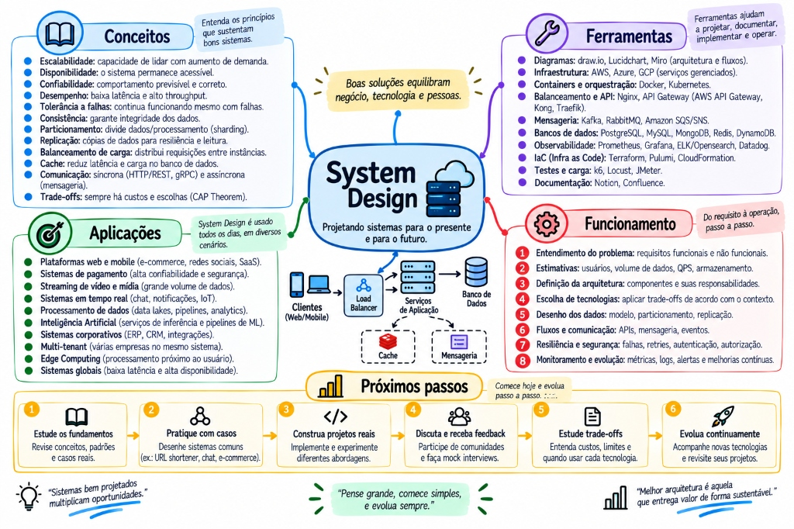

O nono da série. Os outros explicam mecanismos; este ensina a escolher entre eles sob restrição — que é o que System Design realmente é. Em cima, a trilha visual interativa e o mapa mental completo da disciplina. Embaixo, o conteúdo dissecado em 12 partes: o método, as contas de guardanapo, a escala de leitura/escrita, a sobrevivência à falha, o framework dos 8 passos, o catálogo dos 17 sistemas do mundo real e o módulo de System Design para IA e LLMs (2026).

MAPA MENTAL PRINCIPALSYSTEM DESIGN — Projetando Sistemas para o Presente e para o Futuro
Sempre com casoTodo tópico abre com o problema concreto e os números dele.
A conta antes da caixaEstimativa de guardanapo vem antes de desenhar arquitetura.
Gate e provaCada degrau tem condição de entrada e evidência de saída.
Onde a teoria moraLink para o documento que explica, em vez de reexplicar.
↗
A trilha: da pergunta vaga ao sistema que sobrevive
Comece por aqui. Siga o caminho de cima para baixo, clique em qualquer nó para abrir o painel — e use o modo teste para revisar sem reler.
01
O método: transformar a frase vaga em número
Toda entrevista e todo projeto real começam com uma frase que não é requisito. O trabalho é convertê-la.
“10 mil requisições por segundo” não é diagnóstico
essencialcaso 10k RPS
Direto: a mesma taxa pode ser trivial ou impossível. O número sozinho não descreve problema nenhum — o que descreve é contrato, workload e gargalo, nessa ordem.
o caso
O enunciado chega assim: “o banco não está aguentando 10 mil requisições por segundo. O que você faz?”
A resposta que elimina candidato é “coloco um Redis na frente”. A resposta que abre a conversa é uma pergunta: 10 mil requisições de quê? Se são requisições HTTP e cada uma dispara três consultas, o banco está recebendo 30 mil por segundo — o número que você precisa triplicou antes de qualquer desenho existir.
≈
Analogia. É a diferença entre “meu carro está fazendo barulho” e o diagnóstico do mecânico. Barulho é o sintoma que o dono percebe. O mecânico não troca peça pelo barulho: ele pergunta quando acontece, em que velocidade, com o carro frio ou quente. Só depois ele abre o capô.
Como esse método surgiu
Ele vem da prática de engenharia de confiabilidade: a disciplina de definir objetivos de nível de serviço antes de mexer em qualquer coisa, popularizada pelo trabalho de SRE do Google e depois absorvida pelas entrevistas de design.
Veio substituir: o dimensionamento por analogia — “a empresa X usa Cassandra, então vamos usar Cassandra” — e o ajuste por tentativa, em que se aumenta o pool, depois o cache, depois a máquina, até o sintoma sumir sem ninguém saber qual mudança resolveu.
Onde você usa no dia a dia
Fora da entrevista, é o mesmo roteiro para todo chamado de lentidão. “A tela está devagar” é a frase vaga; o contrato é o SLO que vocês combinaram (ou a falta dele, que já é uma descoberta); o workload são os números do painel; o gargalo é o que o plano de execução e as métricas de pool mostram.
os três blocos, por dentro
Contrato é o que você promete: p99 abaixo de um valor, taxa de erro aceitável, e qual consistência o negócio exige — pode ficar velho por 30 segundos? precisa ler o que acabou de escrever? O contrato define o grau de liberdade que você tem para trocar exatidão por velocidade.
Workload é a natureza do tráfego: proporção de leitura e escrita, média contra pico e por quanto tempo o pico dura, quantas consultas cada requisição dispara, e — a pergunta que quase ninguém faz — qual é a distribuição das chaves. Tráfego uniforme e tráfego Zipf (em que 20% das chaves levam 80% dos acessos) pedem soluções opostas: o segundo é o cenário em que cache funciona; o primeiro é aquele em que cache quase não ajuda.
Gargalo é qual recurso satura primeiro e qual consulta domina. Sem isso, você está otimizando por fé.
Nenhum degrau pode ser pulado: sem contrato não há critério, sem workload não há conta, sem gargalo não há alvo.
armadilhas
Responder antes de entender. É o erro mais caro e o mais comum. Vale mais um minuto de perguntas do que dez de arquitetura em cima da premissa errada.
Supor distribuição uniforme. Quase nunca é. Um único inquilino gigante ou uma “celebridade” muda completamente qual solução funciona.
Confundir média com pico. Dimensionar pela média e cair todo dia às 20h; dimensionar pelo pico e pagar o ano inteiro por dois minutos.
Tratar consistência como detalhe técnico. “O saldo aparece em alguns segundos” é decisão de produto. Precisa ser aprovada, não descoberta em produção.
pratique agoraPegue um endpoint lento do seu trabalho e escreva as três linhas: contrato, workload, gargalo. Se você não conseguir preencher alguma, acabou de descobrir o que medir amanhã.
prova de domínioVocê recebe “a API está lenta” e, sem tocar em código, devolve três perguntas cujas respostas mudam a solução — e consegue explicar, para cada uma, qual caminho você tomaria em cada resposta possível.
A conta de guardanapo — e a lei de Little
essencialverificar sempre
Direto:L = λ × W. Concorrência média é igual a chegadas por segundo vezes o tempo médio dentro do sistema. É a conta que transforma taxa — que você sabe — em ocupação, que é o que decide o dimensionamento.
o caso
Voltando aos 10 mil: cada requisição dispara três consultas sequenciais de 8 ms. Então λ = 30.000 consultas por segundo e W = 0,008 s.
L = 30.000 × 0,008 = 240. Há, em média, 240 execuções concorrentes no banco. O pool configurado tem 20.
≈
Analogia. Um restaurante recebe 30 pessoas por minuto e cada uma fica 8 minutos. Em regime, há 240 pessoas dentro. Se o salão tem 20 cadeiras, a conta não está dizendo “compre 240 cadeiras” — está dizendo que ou o salão comporta 240, ou as pessoas precisam ficar menos tempo. Reduzir o tempo de permanência quase sempre é mais barato que ampliar o salão.
Como surgiu
É um teorema de teoria de filas, provado por John Little em 1961. A força dele é a generalidade: vale para qualquer sistema estável, independentemente da distribuição de chegadas ou do tempo de serviço. Não é uma aproximação — é uma identidade.
Veio substituir: o dimensionamento por tentativa. Antes dele, a resposta para fila era aumentar o pool até parar de doer — o que costuma transferir a saturação da aplicação para o banco, onde ela é muito pior.
Onde você usa
Em toda decisão de pool, de número de consumidores de fila e de tamanho de thread pool. Também no caminho inverso: sabendo quantas conexões o banco sustenta, a conta diz qual tempo de permanência você precisa atingir para caber nelas.
L = λ × W
30.000 × 0,008 = 240Execuções concorrentes em média. Compare com o que o banco sustenta — não com o que você gostaria.
no banco = leituras × (1−hit) + escritas
9.500 × 0,20 + 500 = 2.400Com 80% de acerto de cache. Note que a escrita não é aliviada por cache nenhum.
teto ingênuo ≈ pool ÷ W
20 ÷ 0,010 = 2.000 ciclos/sPor instância, e só no papel: contenção, rede, commit e cauda longa derrubam esse número.
O que a conta não autoriza é igualmente importante. Ela não diz “configure o pool com 240”. Primeiro porque o banco quase nunca sustenta 240 execuções simultâneas — a partir de certo ponto, mais concorrência reduz a vazão, porque o tempo se gasta em troca de contexto e disputa de trava. Segundo porque o pool é uma comporta de admissão: a fila nele é um sinal de pressão, não uma ordem para abrir mais.
A leitura correta é: ou o banco aguenta 240, ou preciso reduzir W. E reduzir W tem três caminhos baratos — menos consultas por requisição, consulta mais eficiente, transação mais curta — que valem ser esgotados antes de qualquer infraestrutura nova.
armadilhas
Ler o resultado como configuração. A conta revela viabilidade; ela não dimensiona nada sozinha.
Misturar unidades. λ em requisições por segundo com W em milissegundos dá um número mil vezes errado — e plausível o bastante para passar despercebido.
Apresentar estimativa como promessa. Diga “essa conta sugere”, nunca “o sistema suporta”. O modelo usa médias estacionárias e ignora p99, locks e variação de chave.
Esquecer que cache não alivia escrita. Toda escrita chega ao banco, com hit rate de 99% ou de 0%.
pratique agoraAbra as métricas de um serviço seu, pegue requisições por segundo e tempo médio de consulta, e calcule L. Compare com o tamanho do pool. Se L for maior, procure a fila de espera do pool no painel — ela vai estar lá.
prova de domínioAlguém propõe subir o pool de 20 para 100 “porque está com fila”. Você consegue explicar, com números, por que isso provavelmente vai piorar — e qual seria a primeira medida no lugar.
Os quatro erros que eliminam candidato
reconhecer
Direto: o entrevistador não avalia o desenho final, avalia o raciocínio. Quatro padrões derrubam a avaliação independentemente de o desenho estar certo.
≈
Analogia. É uma prova de matemática em que vale mais o desenvolvimento do que o resultado. Chegar ao número certo sem mostrar o caminho não prova que você saberia chegar de novo num problema diferente.
Um: propor antes de entender. Já tratado acima, e ainda é o mais comum. A tentação vem da ansiedade de parecer produtivo.
Dois: citar tecnologia como se fosse resposta. “Uso Kafka” não explica nada. Kafka resolve buffer, ordenação por partição e releitura do histórico. Se o problema era latência de leitura, Kafka não é resposta — e quem cita sem nomear qual propriedade está usando revela que decorou a solução de outra pessoa.
Três: não saber o preço. Todo mecanismo cobra. Cache cobra invalidação e uma janela de dado velho. Réplica cobra lag e um caminho novo de falha. Sharding cobra roteamento, consultas que atravessam nós e rebalanceamento. Fila cobra ordem parcial, duplicidade e um novo componente para operar. Quem propõe sem nomear o preço não está projetando, está listando.
Quatro: prometer garantia que não existe. O exemplo clássico é exactly-once sem escopo. Entrega exatamente uma vez não existe de ponta a ponta num sistema distribuído; o que existe é entrega ao menos uma vez somada a efeito idempotente, que produz o mesmo resultado observável. Dizer a frase sem a qualificação é o tipo de erro que um entrevistador sênior anota.
E um quinto, silencioso: pensar sem narrar. Ficar dois minutos calado e apresentar o desenho pronto desperdiça justamente o que estava sendo avaliado. Diga em voz alta a hipótese que você está considerando e por que descartou as outras.
armadilhas
Escalar a aplicação quando o gargalo é o banco. A fila só muda de lugar, e agora com mais conexões disputando o mesmo recurso saturado.
Responder com a arquitetura da empresa grande. O desenho do Instagram resolve problemas que você não tem, e cobra um time que você não tem.
Não perguntar o orçamento. Complexidade operacional é custo. Uma solução que exige um time de plantão não é gratuita por rodar em software livre.
pratique agoraPegue a última decisão técnica que você tomou e escreva, em uma linha, o preço dela. Se não conseguir nomear nenhum, provavelmente você ainda não entendeu o mecanismo.
prova de domínioVocê consegue defender uma solução e apresentar espontaneamente o cenário em que ela seria a escolha errada.
02
Escalar leitura: a escada, não o checklist
Oito degraus em ordem de custo operacional. Cada um com condição de entrada e evidência de saída — e a permissão de parar assim que o SLO for atendido.
A escada de decisão
essencialcaso 10k RPS
Direto: a ordem existe para você parar cedo. Quase todo problema de leitura morre nos três primeiros degraus, que não exigem infraestrutura nova.
o caso
Com o diagnóstico da Parte 01 na mão — 30 mil consultas por segundo, uma delas consumindo 62% do tempo, fila no pool —, a pergunta é por onde começar.
A resposta que impressiona não é “Redis”. É: ponho timeout e limite de concorrência para parar de aceitar trabalho ilimitado enquanto investigo; depois olho consultas por requisição — se são três e dá para ser uma, acabei de dividir a carga por três sem infraestrutura nova e sem nenhuma janela de dado velho.
00
Proteja e observe
SLO definido, timeout em tudo, limite de concorrência e telemetria. Pare de aceitar trabalho ilimitado enquanto investiga.
gateVocê sabe qual recurso satura e qual consulta domina?
01
Remova trabalho evitável
N+1, payload excessivo, falta de paginação, varredura acidental, serialização cara, chamada duplicada.
provaConsultas por requisição e bytes por requisição caíram.
02
Otimize consulta e índice
Plano real, cardinalidade, páginas lidas. Índice desenhado para o acesso, não para a coluna.
provaMenos páginas lidas, menos tempo, menos linhas descartadas.
03
Controle concorrência e transação
Pool como admissão, transações curtas, nenhuma chamada remota dentro da transação, sem tempestade de retry.
provaFila do pool baixa e o banco deixou de saturar.
04
Escala vertical ou especialização
Mais memória, IOPS ou CPU costuma ser o mais barato. Separe relatório, job e endpoint ruidoso do resto.
gateO ganho atende o horizonte e cabe no custo?
05
Cache onde há reuso
Local, distribuído ou de borda, conforme o escopo. Fonte da verdade, freshness e invalidação definidos antes.
gateExiste reutilização real e staleness tolerável?
06
Réplicas de leitura
Distribua consultas somente-leitura quando o primário continua sendo o limite. Trate lag, read-your-writes e failover.
gateA leitura domina e pode ficar velha?
07
Particione só com evidência
Sharding muda transação, junção, rebalanceamento e operação inteira. Não é resposta padrão para 10k leituras/s.
gateUm nó bem projetado realmente deixou de atender?
Não existe limiar universal. “Réplica só acima de X mil RPS” é folclore. Uma consulta pesada pode exigir isolamento com poucas centenas de requisições por segundo; uma leitura por chave num nó robusto serve muito mais que 10 mil. A decisão vem de saturação medida, SLO, custo e consistência — nunca de um número decorado.
armadilhas
Tratar como checklist. A escada serve para parar, não para percorrer inteira.
Pular para o degrau 05 ou 06. É o atalho mais comum e o que mais cria dívida: cache mal invalidado e réplica com lag são problemas novos, não só soluções.
Subir sem a prova do degrau anterior. Sem medir, você não sabe se o degrau resolveu — e vai acumular mecanismos que ninguém consegue remover depois.
pratique agoraEscolha o endpoint mais lento que você conhece e localize em qual degrau ele está. Depois responda: qual é a prova de saída desse degrau, e você a tem?
prova de domínioVocê recita a escada de trás para frente, e para cada degrau nomeia o preço que ele cobra na operação.
Índice é estrutura de acesso, não enfeite de coluna
essencialprofundidade
Direto: o índice é desenhado para uma consulta concreta. A ordem das colunas vem da consulta: primeiro igualdade, depois faixa, depois ordenação.
o caso
A consulta que domina 62% do tempo é a listagem de pedidos de um cliente, das mais recentes para as mais antigas, com limite de 50.
Existe um índice em cliente_id e outro em criado_em. Parece coberto — e não está. O banco usa um dos dois, filtra por ele e depois ordena o que sobrou. Com um cliente grande, “o que sobrou” são dezenas de milhares de linhas ordenadas a cada requisição.
≈
Analogia. Dois índices separados são como ter a lista telefônica ordenada por sobrenome e, num outro volume, ordenada por cidade. Para achar “os Silva de Recife” você escolhe um volume e varre. Um índice composto (cidade, sobrenome) é o volume único em que os Silva de Recife já estão juntos, na ordem.
Como funciona por dentro
A B-tree mantém as chaves ordenadas. Essa ordenação é a fonte de tudo: ela serve para igualdade, para faixa, para prefixo e para ORDER BY — mas só na ordem em que as colunas foram declaradas. Um índice (a, b) atende filtro por a e por a, b; não atende filtro só por b, porque dentro da árvore os valores de b estão espalhados.
Veio substituir: a varredura sequencial, que era a única forma de busca antes dos índices — e continua sendo o que o banco faz quando o índice não serve.
Índice covering
Se todas as colunas que a consulta devolve estiverem no índice, o banco responde sem tocar na tabela. É a diferença entre ler algumas páginas do índice e ler o índice mais uma página da tabela por linha retornada. Em listagens grandes, esse é o ganho que mais aparece.
antes — dois índices separados
CREATE INDEX ix1 ON pedido (cliente_id);
CREATE INDEX ix2 ON pedido (criado_em);
SELECT id, criado_em, total FROM pedido
WHERE cliente_id = ?
ORDER BY criado_em DESC LIMIT 50;
-- plano: Index Scan em ix1 + Sort
-- rows removed by filter: 48.312
-- o banco ordena tudo para devolver 50
depois — um índice composto e covering
CREATE INDEX ix ON pedido (cliente_id, criado_em DESC)
INCLUDE (total);
SELECT id, criado_em, total FROM pedido
WHERE cliente_id = ?
ORDER BY criado_em DESC LIMIT 50;
-- plano: Index Only Scan
-- sem Sort: a ordem ja esta no indice
-- le 50 linhas, nao 48.362
Repare no que mudou de verdade: não foi “ficou mais rápido”, foi o trabalho deixou de existir. O Sort sumiu do plano porque o índice já entrega na ordem pedida, e o acesso à tabela sumiu porque o índice já tem todas as colunas. Esse é o tipo de ganho que não degrada quando o volume cresce — diferente de cache, que degrada quando a taxa de acerto cai.
armadilhas
Criar índice sem ler o plano. Metade das vezes o problema é outro, e você acabou de deixar toda escrita mais lenta de graça.
Um índice por coluna. Custa escrita e espaço e raramente atende a consulta real, que quase sempre combina filtro e ordenação.
Esperar índice em LIKE '%x'. Sem começo fixo, a ordenação da árvore não serve para nada.
Índice demais. Cada um é atualizado a cada INSERT, UPDATE e DELETE. Em tabela de escrita intensa, índice não usado é puro prejuízo.
pratique agoraRode EXPLAIN ANALYZE na consulta mais frequente do seu sistema e procure duas coisas: a presença de Sort e o número de linhas descartadas pelo filtro. As duas dizem exatamente qual índice está faltando.
prova de domínioDada uma consulta com filtro de igualdade, filtro de faixa e ordenação, você escreve o índice correto de primeira e explica por que a ordem das colunas é aquela.
Réplica e cache: os dois que compram tempo cobrando em frescor
trade-off
Direto: os dois degraus mais populares da escada são os dois que introduzem uma janela de dado velho. Por isso vêm depois, e não antes.
o caso
Depois de remover o N+1 e corrigir o índice, os 30 mil QPS viraram 9 mil e o p99 caiu para 40 ms. O SLO foi atendido — e aqui a escada termina.
Se não tivesse sido, o próximo degrau seria cache. E a primeira pergunta do cache não é “Redis ou Caffeine?”: é quanto tempo esse dado pode estar velho? Se a resposta for “nenhum”, cache não é a ferramenta.
Réplica — o que você compra
Capacidade de leitura adicional sem tocar no primário. Serve bem para relatório, busca e listagem pública.
Cobra: lag de replicação visível ao usuário
Exige: rota separada para leitura que precisa do dado recém-escrito
Adiciona: um novo modo de falha — a réplica que ficou para trás
Cache — o que você compra
Latência muito menor e alívio proporcional ao reuso. Funciona bem com distribuição Zipf, e quase nada com acesso uniforme.
Cobra: invalidação, que é o problema difícil
Exige: decidir a janela de staleness antes de implementar
Adiciona: risco de vazar dado entre usuários se a chave estiver errada
Read-your-writes é a garantia que quebra primeiro quando se adota réplica: o usuário cria um pedido, é redirecionado para a listagem, a listagem lê da réplica que ainda não recebeu, e o pedido não está lá. A correção é rotear para o primário por um curto período após uma escrita daquele usuário, ou carimbar a posição de replicação e exigir que a réplica tenha alcançado.
Monotonic reads é a segunda: o usuário atualiza a página, cai em outra réplica mais atrasada, e o dado volta no tempo. A correção é fixar o usuário numa réplica durante a sessão.
No cache, o problema análogo é o stampede: a chave mais quente expira e mil requisições vão ao banco no mesmo milissegundo, justamente para o dado mais caro. As saídas são bloqueio de repopulação — só uma requisição recalcula, as outras esperam — ou expiração com jitter, espalhando os vencimentos.
onde a teoria moraO mecanismo interno da replicação, os níveis de isolamento e o padrão cache-aside estão detalhados em Conceitos de Backend completo. A decisão entre consistência forte e eventual, e o que o negócio aceita, está em Arquitetura completo. Aqui interessa apenas quando pagar por eles.
armadilhas
Mandar tudo para a réplica. O usuário não encontra o que acabou de criar, e o bug é intermitente — o pior tipo.
Cachear dado por usuário numa chave global. Um usuário vê o dado do outro. É a falha mais cara desta parte inteira.
Cachear na borda uma resposta que varia por sessão. Mesma falha, com alcance maior.
Celebrar hit rate. 80% de acerto significa que dobrar o tráfego dobra os 20% que passam. O alívio é proporcional, não absoluto.
pratique agoraEscolha uma tela do seu sistema e escreva a janela de staleness tolerada por ela, em segundos. Depois pergunte a quem cuida do produto se concorda. A conversa costuma ser reveladora.
prova de domínioVocê explica, sem consultar, por que réplica não resolve problema de escrita, por que cache não ajuda em acesso uniforme, e o que é preciso fazer para que o usuário sempre veja o que acabou de gravar.
03
Escalar escrita: a assimetria e as quatro alavancas
Leitura se resolve duplicando. Escrita, não — e é por isso que o teto chega tão mais cedo.
Por que escrita é mais difícil que leitura
essencial
Direto: leitura você duplica — réplica, cache, CDN. Escrita precisa ir ao dono do dado, virar durável e atualizar todo índice. Duplicar o banco não multiplica capacidade de escrita: multiplica o trabalho.
≈
Analogia. Ler um livro numa biblioteca escala fotocopiando: mil pessoas leem mil cópias ao mesmo tempo. Escrever no livro, não. Se mil pessoas escrevem em mil cópias, você não tem um livro atualizado — tem mil livros diferentes, e agora um problema muito pior de reconciliar.
Cada escrita paga uma sequência fixa: gravar no log de transação para garantir durabilidade, atualizar a página de dados, atualizar cada índice existente na tabela, e — se houver replicação síncrona — esperar a confirmação de outro nó antes de responder. Nada disso é paralelizável por duplicação.
Consequência prática: cada índice que você cria para acelerar leitura desacelera toda escrita. Em tabela de escrita intensa, esse é um trade-off que precisa ser medido, não assumido.
A assimetria é estrutural, não uma limitação de produto: só existe um dono por dado.
armadilhas
Propor réplica de leitura para problema de escrita. É o teste mais rápido de se a pessoa entendeu a assimetria.
Ignorar o custo dos índices na escrita. Dez índices numa tabela de eventos é dez vezes o trabalho por linha inserida.
Confundir vazão de pico com vazão sustentada. Um banco absorve rajada usando cache de escrita; sustentar é outra coisa.
pratique agoraNuma tabela sua de escrita intensa, conte os índices. Para cada um, ache a consulta que o usa. Se não achar, você encontrou um custo puro.
prova de domínioVocê explica em trinta segundos por que uma arquitetura com dez réplicas ainda tem exatamente a mesma capacidade de escrita de antes.
Sharding: a partition key é tudo
essencialcaso 1M eventos/s
Direto: sharding é a única alavanca que realmente multiplica capacidade de escrita — se a chave distribuir. Se não distribuir, você pagou por N bancos e usa um.
o caso
Um sistema de analytics recebe 1 milhão de eventos por segundo — cliques, visualizações, ações. Nenhum banco relacional único grava isso linha a linha.
A pergunta que o entrevistador faz, quase sempre com estas palavras: “qual seria a sua partition key, e por quê?”. E é aqui que a entrevista é decidida, porque a resposta revela se você pensa em distribuição real de dados ou em diagrama bonito.
≈
Analogia. Três caixas num supermercado e um funcionário direcionando a fila. Se ele direciona por inicial do sobrenome, a caixa dos “S” fica com metade da loja e as outras duas vazias. Se direciona alternando, as três ficam iguais. A regra de direcionamento é a partition key — e trocá-la depois, com as filas já formadas, é exatamente o pesadelo do rebalanceamento.
Como funciona
Cada escrita vai para um shard, escolhido aplicando uma função sobre a partition key. Com hash(user_id), usuários caem espalhados e a carga divide por N. Com país numa base 90% brasileira, um shard recebe 90% e os outros dormem — o hot shard.
Veio substituir: a escala vertical pura, que tem teto físico, e a replicação, que não ajuda em escrita. Sharding é a resposta quando um nó bem projetado realmente não cabe mais.
Qual banco escolher
Cassandra, DynamoDB e ClickHouse nasceram distribuídos: você declara a chave e eles cuidam de roteamento, rebalanceamento e replicação. PostgreSQL shardado é possível, mas o trabalho é seu — roteamento na aplicação ou extensão, e rebalanceamento na mão. Para escrita massiva, escolher um banco que já resolveu isso costuma sair muito mais barato em complexidade do que em licença.
chave ruim — concentra
partition key = pais
-- distribuicao real da base:
BR 90% -> shard 1 (sufocado)
US 6% -> shard 2 (ocioso)
PT 4% -> shard 3 (ocioso)
-- resultado: pagou 3, usa 1
-- e o rebalanceamento e caro de fazer depois
chave boa — espalha
partition key = hash(user_id)
shard 1 ~ 33%
shard 2 ~ 33%
shard 3 ~ 33%
-- capacidade x 3, e da para crescer somando shards
-- preco: consulta que atravessa shards perde o ganho
O critério de uma boa partition key: alta cardinalidade (muitos valores distintos), distribuição uniforme na prática — não na teoria —, e alinhamento com o padrão de consulta, para que a leitura mais comum caia num shard só. Quando esses três brigam, o terceiro costuma ser o que vale sacrificar primeiro.
armadilhas
Sharding prematuro. Complexidade enorme — roteamento, consulta cruzada, rebalanceamento, operação — para um problema que ainda não existe. Meça antes.
Chave temporal.timestamp ou data de hoje é a pior escolha possível em escrita: todo mundo grava no mesmo shard, o de agora.
Não considerar a distribuição real. A chave que parece uniforme no diagrama frequentemente não é nos dados de produção.
Esquecer o inquilino gigante. Num sistema multiempresa, hash(empresa_id) distribui bem até chegar o cliente que sozinho representa 40% do volume.
pratique agoraNa sua maior tabela, rode um GROUP BY na coluna candidata a partition key e olhe a distribuição. Se o maior valor levar mais de 20% das linhas, essa chave criaria hot shard.
prova de domínioDada uma tabela e um padrão de acesso, você propõe uma partition key, nomeia a distribuição que ela produz e diz qual consulta vai ficar mais cara por causa dela.
Fila, batching e agregação na borda
essencialcaso 1M eventos/s
Direto: a fila achata o pico e não cria capacidade. O batching troca latência por vazão. A agregação na borda reduz o volume na origem. As três resolvem problemas diferentes — e a confusão entre a primeira e a terceira é o erro mais comum de toda esta parte.
o caso
No sistema de 1 milhão de eventos por segundo, a montagem completa é: clientes publicam no Kafka particionado, que absorve a irregularidade e mantém ordem por chave; consumidores leem e gravam em lotes de mil linhas; o destino é um banco shardado ou colunar. E, quando o evento bruto individual não precisa ser guardado, servidores de borda somam localmente e mandam totais — o banco central passa a receber ~100 escritas por segundo em vez de 1 milhão.
≈
Analogia. A fila é a fila do banco: absorve a hora do almoço, mas se chegam mais pessoas por hora do que os caixas atendem, ela cresce até a rua. O batching é o caixa que atende dez pessoas da mesma empresa de uma vez. A agregação na borda é a empresa mandar uma pessoa com os dez depósitos somados.
A fila. Entre quem produz e o banco, ela permite responder ao usuário na hora e drenar no ritmo que o banco aguenta. Mas funciona sob uma condição estrita: a vazão média do banco precisa ser maior que a taxa média de entrada. Se a média já não cabe, a fila apenas acumula — o atraso cresce sem limite e você trocou “cair” por “atrasar para sempre”, que frequentemente é pior, porque o sistema parece funcionar enquanto entrega dado cada vez mais velho.
O batching. Cada INSERT isolado paga ida e volta na rede, parsing, transação, log e atualização de índice. Mil inserts pagam isso mil vezes; um lote de mil paga praticamente uma. O preço é latência: você espera encher o buffer. Para métrica, log e evento, irrelevante. Para “o usuário precisa ver agora”, inaceitável.
antes — linha a linha
for (Evento e : lote) {
jdbc.update(INSERT, e.id(), e.tipo(), e.ts());
}
// 1.000 idas e voltas
// 1.000 transacoes
// 1.000 atualizacoes de indice
depois — lote com corte por tempo
// acumula ate 1.000 linhas OU 200 ms,
// o que vier primeiro
if (buffer.size() >= 1000 || decorreu(200)) {
jdbc.batchUpdate(INSERT, buffer);
buffer.clear();
}
// sem o corte por tempo, trafego baixo
// deixa o dado preso no buffer para sempre
A agregação na borda. A pergunta libertadora é: você precisa mesmo de cada evento bruto? Se o negócio quer saber “quantas visualizações na última hora”, não faz sentido transportar 1 milhão de linhas até o centro — basta transportar o número. Servidores próximos ao usuário acumulam e enviam totais consolidados. O volume que chega ao banco central cai em ordens de grandeza.
O preço é irreversível e precisa ser dito em voz alta: o que foi agregado não volta. Se amanhã alguém quiser uma análise nova sobre o evento individual, o dado não existe mais. Por isso a agregação convive bem com um armazenamento bruto barato e de retenção curta.
armadilhas
Fila para carga constante. O erro conceitual campeão. Fila é amortecedor, não multiplicador.
Lote sem corte por tempo. Em tráfego baixo, o dado fica preso no buffer e ninguém entende por que “sumiu”.
Agregar o que ainda vai ser perguntado. Decisão irreversível tomada por conveniência de infraestrutura.
Esquecer a idempotência do consumidor. Fila entrega ao menos uma vez; sem chave de idempotência, o lote reprocessado duplica tudo.
onde a teoria moraConfirms, ack manual, prefetch, DLQ, outbox e consumidor idempotente estão detalhados em Mensageria e RabbitMQ completo. Aqui a fila aparece só no papel de alavanca de escala — e com a condição que quase ninguém enuncia.
pratique agoraSuba um PostgreSQL em container, insira 100 mil linhas uma a uma e depois em lotes de mil. Meça os dois. A diferença costuma ser de uma ordem de grandeza, e ver isso com os próprios olhos fixa mais que qualquer explicação.
prova de domínioAlguém propõe “colocar uma fila” para resolver um banco saturado. Você faz uma pergunta que revela se a fila vai resolver ou apenas adiar — e sabe qual é a resposta que condena a proposta.
04
Existência em escala: “esse nome está livre?”
Dois bilhões de usuários, resposta em milissegundos enquanto a pessoa digita. O problema parece exigir mágica e não exige.
O ingênuo já é quase rápido — e o Bloom filter cobre o resto
essencialcaso 2 bi de usernames
Direto: um índice único transforma “achar em 2 bilhões” em cerca de cinco saltos de árvore. O Bloom filter não torna isso mais correto — torna desnecessário na maioria das consultas.
o caso
Uma rede social com 2 bilhões de usuários precisa responder, enquanto a pessoa digita, se o username escolhido está disponível.
A intuição diz que procurar em 2 bilhões é lento. A intuição está errada: SELECT 1 FROM users WHERE username = ? LIMIT 1 num índice único custa sub-milissegundo. O problema real não é a latência de uma consulta — é o volume delas, porque cada tecla de cada pessoa vira uma.
≈
Analogia. O Bloom filter é o porteiro que tem a lista de moradores de cor, mas com uma memória imperfeita de um jeito específico: quando ele diz “essa pessoa não mora aqui”, está sempre certo; quando diz “acho que mora”, pode estar confundindo com outro nome parecido — e aí alguém confere na lista de verdade. Ele nunca barra um morador; às vezes faz conferir sem necessidade.
Por que a B-tree já é rápida
O fan-out é alto: cada nó guarda centenas de chaves. Dois bilhões de chaves cabem em cerca de cinco níveis. Como o custo é o número de níveis, e não o número de linhas, o tamanho da tabela quase não muda a latência do lookup por chave — e essa propriedade sustenta boa parte dos sistemas grandes que existem.
O que a alternativa seria: varredura sequencial. Em 2 bilhões de linhas, segundos a minutos. Inviável por requisição — e é exatamente o que acontece quando o índice não existe ou a consulta não consegue usá-lo.
O que o Bloom filter é
Um vetor de bits mais k funções de hash. Inserir liga k bits; consultar olha esses k bits. Algum deles 0 significa que o valor nunca foi inserido — resposta definitiva, em memória, sem tocar no banco. Todos 1 significa “provavelmente existe”, e pode ser falso positivo.
A economia aparece na assimetria do tráfego: a maioria esmagadora dos nomes que alguém digita está livre, e é exatamente esse o caso em que o Bloom responde sozinho. Para 2 bilhões de chaves com 1% de falso positivo, são cerca de 2 a 3 GB de memória — contra dezenas ou centenas de GB do índice em disco.
Cada camada existe para que a próxima seja consultada menos vezes. Nenhuma delas substitui a última.
armadilhas
Tratar o Bloom como fonte da verdade. Ele é barreira de economia. Quem garante unicidade é o índice, no momento da gravação.
Bloom sem plano de remoção. O filtro clássico não suporta remover: username liberado continua marcado como “talvez ocupado” para sempre. A saída é reconstruir periodicamente ou usar uma variante contável.
Cache sem invalidação no INSERT. Alguém registra o nome e o cache continua dizendo “livre” por mais um TTL inteiro.
Esquecer o debounce no cliente. Sem ele, cada tecla vira uma requisição, e você multiplicou o tráfego por oito antes de qualquer otimização de servidor.
pratique agoraCrie uma tabela com 1 milhão de linhas, rode a consulta de existência com e sem índice e compare os planos. Depois estime: quantos níveis a B-tree teria com 2 bilhões?
prova de domínioVocê explica por que o Bloom filter pode errar dizendo “ocupado” mas nunca dizendo “livre”, e por que essa assimetria é exatamente o que o torna seguro nesse uso.
A checagem é UX; a verdade acontece no INSERT
correção
Direto: duas pessoas podem ver “disponível” no mesmo instante. Nenhuma consulta resolve isso. Quem desempata é a restrição única na gravação.
o caso
Duas pessoas digitam thallys_dev ao mesmo tempo. As duas consultas dizem “livre”, porque ninguém ainda gravou. As duas telas mostram o visto verde. As duas apertam “criar conta”.
Se não houver UNIQUE, as duas contas são criadas e o sistema passa a ter dois donos para o mesmo nome — uma corrupção que só aparece dias depois, quando alguém tenta fazer login.
É a mesma família de problema da race condition de estoque, com um detalhe agravante: aqui a janela entre ler e escrever não é de milissegundos, é de segundos ou minutos — o tempo que a pessoa leva para preencher o resto do formulário. Nenhuma trava suportaria ficar segurando o recurso por esse tempo, e é por isso que a solução não é travar, é deixar a gravação decidir.
antes — confia na checagem
if (repo.existePorUsername(nome)) {
throw new UsernameEmUsoException();
}
repo.salvar(new Usuario(nome, ...));
-- sem UNIQUE no banco:
-- dois fluxos passam pelo if
-- dois usuarios criados com o mesmo nome
depois — a gravação decide
CREATE UNIQUE INDEX ix_users_username ON users (username);
try {
repo.salvar(new Usuario(nome, ...));
} catch (DataIntegrityViolationException e) {
// traduza para o dominio, nao deixe virar 500
throw new UsernameEmUsoException();
}
-- um passa, o outro recebe violacao
O princípio geral, que vale muito além deste caso: a checagem prévia serve à experiência do usuário — avisar cedo, evitar o formulário inteiro em vão. A garantia tem que morar na camada que não pode ser contornada por concorrência, e essa camada é sempre a mais próxima do dado. Consulta informa; restrição garante.
armadilhas
Deixar a violação virar erro 500. É um caso de negócio esperado, não uma falha do sistema. Traduza para uma mensagem que o usuário entenda.
Reservar o nome na checagem. Criar uma reserva a cada tecla digitada enche a base de nomes presos por pessoas que nunca completaram o cadastro. Se for reservar, tem que ser com prazo curto e no momento de submeter.
Normalização inconsistente. Se o login ignora maiúsculas mas o índice não, Thallys e thallys viram duas contas que disputam o mesmo login. O índice precisa ser criado sobre a forma normalizada.
pratique agoraEscreva um teste que dispara duas gravações concorrentes do mesmo username com CyclicBarrier. Rode sem o índice único e depois com ele. O teste que falha é o que ensina.
prova de domínioVocê lista três lugares no seu sistema onde existe uma checagem prévia sem restrição correspondente no banco — e sabe dizer qual delas causaria o pior estrago.
05
Listar em escala: paginar um milhão
A paginação é o lugar em que um sistema parece rápido em desenvolvimento e morre em produção — porque quase ninguém testa a página cinco mil.
OFFSET paga pelo que joga fora
essencialcaso 1 milhão de pedidos
Direto:LIMIT 10 OFFSET 500000 faz o banco produzir 500.010 linhas ordenadas e descartar 500.000. O custo cresce linearmente com a profundidade.
o caso
Uma API devolve a lista de pedidos de um cliente. Em desenvolvimento, com 200 registros, tudo responde em 8 ms. Em produção, um cliente tem 1 milhão de pedidos e um relatório varre a lista inteira.
A página 1 continua em 8 ms. A página 5.000 leva quatro segundos e segura a conexão do pool durante todo esse tempo — o que, pela conta de Little da Parte 01, derruba a capacidade de todo o resto do sistema junto.
≈
Analogia. É pedir “as 10 palavras a partir da 500.000ª” de um dicionário contando desde a primeira página. O dicionário está ordenado — dá para abrir direto perto do lugar — mas o OFFSET obriga a contar uma por uma. A informação de onde parar existe; o comando simplesmente não permite usá-la.
Por que o banco não consegue “pular”
Para saber qual é a 500.001ª linha naquela ordem, o banco precisa ter produzido as 500.000 anteriores. Não existe atalho: a ordenação é o que define a posição, e a posição só existe depois de ordenar. Ele lê, ordena, conta e descarta.
Por que continua sendo usado: porque é a única forma de oferecer “ir para a página 47” e mostrar o total de páginas. Quando a interface exige isso e a profundidade é pequena, offset é a escolha certa — o erro é usá-lo onde a profundidade é ilimitada.
Keyset: a fronteira vira consulta
Em vez de dizer quantas pular, você diz depois de qual item continuar. Como o índice está ordenado, o banco salta direto para aquele ponto da árvore e lê as 50 linhas seguintes. O custo é o mesmo na página 1 e na página 5.000.
antes — offset
SELECT id, criado_em, total FROM pedido
WHERE cliente_id = ?
ORDER BY criado_em DESC
LIMIT 10 OFFSET 500000;
-- le 500.010 linhas, devolve 10
-- pagina 1: 8 ms
-- pagina 5000: 4.000 ms
-- e segura a conexao do pool o tempo todo
depois — keyset
SELECT id, criado_em, total FROM pedido
WHERE cliente_id = ?
AND (criado_em, id) < (?, ?)
ORDER BY criado_em DESC, id DESC
LIMIT 51;
-- salta direto na arvore
-- pagina 1: 8 ms
-- pagina 5000: 8 ms
-- 51 = 50 + "existe proxima?" sem COUNT
Duas condições fazem o keyset funcionar, e ignorar qualquer uma delas anula o ganho inteiro. Primeira: a comparação precisa ser em tupla — (criado_em, id) < (?, ?) — e não uma conjunção de comparações soltas, que produz um filtro diferente e não permite o salto. Segunda: o índice precisa ter exatamente as mesmas colunas, na mesma ordem e no mesmo sentido. Índice em (cliente_id, criado_em DESC, id DESC) serve; índice em (criado_em) sozinho não.
armadilhas
Ordenar só por data. Datas empatam. Com empate e sem desempate estável, um item aparece em duas páginas ou não aparece em nenhuma — e o bug é intermitente e quase impossível de reproduzir.
Medir só a primeira página. É o que faz o problema chegar inteiro em produção.
COUNT(*) para saber o total. Em tabela grande, a contagem custa mais que a página. Buscar N+1 linhas responde “existe próxima?” sem contar nada.
Deixar o cliente escolher o limit sem teto. Alguém vai pedir 100.000.
pratique agoraGere 1 milhão de linhas e rode EXPLAIN ANALYZE com offset 10, 1.000, 100.000 e 500.000. Anote os quatro tempos. Depois repita com keyset. A tabela resultante é o argumento que convence qualquer time.
prova de domínioVocê escreve a consulta keyset correta de primeira, com a comparação em tupla e o desempate, e diz qual índice ela exige — sem consultar nada.
O cursor é contrato de API
profundidade
Direto: o cursor que você devolve vira parte pública da sua API. Ele precisa ser opaco, versionado e ter erros nomeados — senão você congela a sua implementação para sempre.
≈
Analogia. É a senha do caixa. Ela não precisa dizer nada ao cliente sobre como o sistema organiza a fila por dentro — e justamente por não dizer, a gerência pode reorganizar a fila amanhã sem que ninguém precise trocar de senha.
Opaco. Se você devolve ?after=2026-03-14T10:22:00Z&id=8812, acabou de publicar que a ordenação é por data e id. No dia em que precisar mudar para outra ordem, todo cliente quebra. Codificar o payload interno em base64 resolve: o cliente devolve o que recebeu, sem interpretar.
Versionado. Um byte de versão dentro do payload permite evoluir o formato e ainda aceitar cursores antigos por um período de transição.
Com erros nomeados. Três situações precisam de resposta distinta: cursor malformado (o cliente inventou), cursor expirado (passou da janela de validade que você definiu) e cursor incompatível (foi gerado para outra ordenação ou outro filtro). Devolver 400 genérico para os três impede o cliente de reagir corretamente — no segundo caso, ele deveria reiniciar a listagem; no primeiro, é bug dele.
antes — cursor cru
GET /pedidos?after_data=2026-03-14T10:22:00Z
&after_id=8812
// o cliente agora sabe (e depende de):
// - que a ordem e por data
// - que existe um id numerico
// - o formato exato do timestamp
// mudar qualquer um quebra todo mundo
depois — cursor opaco e versionado
GET /pedidos?cursor=djEuMTc0MjEyMzMyMC44ODEy
// payload interno, invisivel ao cliente:
// { "v":1, "ordem":"criado_em_desc",
// "dt":"2026-03-14T10:22:00Z", "id":8812 }
// erros nomeados:
// 400 CURSOR_INVALIDO
// 410 CURSOR_EXPIRADO -> reinicie a listagem
// 409 CURSOR_INCOMPATIVEL -> a ordenacao mudou
armadilhas
Base64 não é segurança. O cliente consegue decodificar. Opacidade aqui é contrato, não sigilo — se houver informação sensível, ela não pode estar no cursor.
Cursor sem validade. Um cursor de seis meses atrás pode apontar para uma linha que não existe mais, ou para uma ordenação que você já trocou.
Cursor que não carrega o filtro. Se o cliente muda o filtro e mantém o cursor, o resultado é silenciosamente errado. O cursor precisa amarrar o contexto em que foi gerado.
pratique agoraPegue uma API paginada do seu sistema e responda: se você precisasse trocar a ordenação padrão amanhã, quantos clientes quebrariam? A resposta mede o quanto o cursor está vazando implementação.
prova de domínioVocê desenha o payload do cursor, escolhe a codificação, define a política de expiração e nomeia os três erros — explicando o que o cliente deve fazer em cada um.
Enquanto você pagina, o mundo muda
correção
Direto: a lista não está congelada. Com inserções concorrentes, offset faz item pular ou repetir; keyset continua depois de uma identidade e não se perde. Quando a travessia precisa ser estável de ponta a ponta, nenhum dos dois basta.
o caso
O usuário está na página 3 de pedidos ordenados do mais novo para o mais antigo. Entre a página 3 e a 4, dois pedidos novos são criados e entram no topo da lista.
Com offset, tudo desceu duas posições: os dois últimos itens da página 3 reaparecem na página 4. Com keyset, a consulta continua depois do último item visto — os novos entraram acima e simplesmente não aparecem nesta travessia, que é o comportamento correto.
Quatro estratégias, quatro intenções
Offset — tela com número de página e profundidade pequena. Aceita instabilidade.
Keyset — rolagem infinita e API. Estável para frente, sem total.
Snapshot / watermark — a travessia precisa ver o mundo de um instante só.
Export assíncrono — o volume não cabe numa requisição.
Snapshot e watermark
Quando a lista precisa ser estável durante a travessia inteira — uma conciliação, um fechamento contábil — você fixa um ponto no tempo e filtra tudo por ele: WHERE criado_em <= :watermark. O que entrar depois não participa. É a única forma de garantir que somar todas as páginas dá o mesmo resultado de uma consulta única.
E existe uma quarta situação, frequentemente confundida com paginação: varrer a base inteira. Alguém precisa exportar um milhão de pedidos. Paginar de 50 em 50 por vinte mil requisições é usar a ferramenta errada — cada requisição paga latência de rede, e a travessia leva minutos ou horas de tráfego. Isso é um export assíncrono: o cliente pede, você devolve 202 com um identificador, um job gera o arquivo em lotes e avisa quando está pronto.
A regra que resolve a escolha: pergunte qual é a intenção, não qual é o volume. Navegar é keyset. Ir para uma página específica é offset. Conciliar é watermark. Levar tudo embora é export. Volume grande com intenção de navegar continua sendo keyset.
armadilhas
Usar paginação de tela para varrer a base. O caso mais comum de uso errado, e o que mais derruba API em produção.
Watermark sem índice na coluna do tempo. Você ganhou estabilidade e perdeu o salto do keyset.
Prometer total exato em lista que muda. O total muda entre uma página e outra; exibi-lo como verdade é criar uma inconsistência visível.
pratique agoraAbra uma listagem paginada do seu sistema, vá para a página 2 e insira um registro que entraria no topo. Volte e avance. Se algum item repetir, você acabou de reproduzir o problema com um clique.
prova de domínioDadas quatro necessidades — rolagem infinita, “ir para a página 47”, fechamento mensal e exportação completa —, você atribui a estratégia certa a cada uma e justifica pela intenção.
06
Arquivos grandes: tirar os bytes do caminho
A regra é simples e quase sempre violada: a sua aplicação não deveria ser o cano por onde o arquivo passa.
URL pré-assinada e multipart
essencialcaso arquivos grandes
Direto: a aplicação autoriza e registra; os bytes vão direto do cliente para o storage. A URL pré-assinada é uma credencial temporária com escopo estreito.
o caso
Usuários precisam enviar vídeos de até 2 GB. Na versão ingênua, o arquivo sobe pela API: cada upload segura uma thread por minutos, consome memória proporcional ao arquivo e satura a banda da aplicação. Dez uploads simultâneos derrubam o serviço inteiro — inclusive as requisições que não tinham nada a ver com arquivo.
≈
Analogia. É a diferença entre o porteiro que carrega toda encomenda até o apartamento e o porteiro que autoriza a entrega e anota no livro. O segundo atende cem entregas no tempo em que o primeiro atende uma — e não fica sem fôlego quando chega um sofá.
Como funciona
A aplicação gera uma URL assinada com prazo curto, amarrada a uma chave que ela definiu, com limite de tamanho e tipo. O cliente envia direto ao storage. Depois, a aplicação confirma por uma chamada de metadados (HEAD) e só então marca o documento como disponível.
Veio substituir: o upload através da API, em que o backend virava proxy de bytes — pagando memória, banda e tempo de thread por algo que não exigia lógica de negócio nenhuma.
A régua por tamanho
Até poucos MB: upload direto pela API é aceitável e mais simples.
Alguns MB a centenas: URL pré-assinada.
Acima disso: multipart, com retomada por parte e envio paralelo.
A régua não é dogma — é o ponto em que o custo da complexidade passa a valer a pena.
Multipart divide o arquivo em partes enviadas separadamente e remontadas pelo storage. São três fases: iniciar (recebe um identificador de upload), enviar cada parte (cada uma devolve um identificador próprio) e completar (manda a lista). Falhou uma parte em cinquenta? reenvia só ela — e é isso que torna viável enviar 2 GB por uma conexão móvel instável.
armadilhas
Deixar o cliente escolher a chave do objeto. Ele sobrescreve o arquivo de outra pessoa. A chave é gerada no servidor, sempre.
Validade longa demais. Uma URL de 24 horas é um acesso permanente para quem a copiar do histórico do navegador.
Não abortar upload incompleto. As partes ficam ocupando espaço e sendo cobradas em silêncio, às vezes por meses.
Confiar no content-type declarado. Ele é escolhido pelo cliente. Verifique o conteúdo de verdade depois.
onde a teoria moraO passo a passo do multipart, o MinIO como S3 local e o fluxo completo de upload estão em Conceitos de Backend completo. Armazenamento de objetos sem depender de um provedor está em Nuvem completo. E o projeto A01 do Laboratório constrói isso do zero.
pratique agoraSuba um MinIO em container, gere uma URL pré-assinada de 60 segundos, use dentro do prazo e use de novo depois de expirar. Leia o corpo dos dois erros — saber qual é economiza uma hora no dia em que acontecer em produção.
prova de domínioVocê explica quais permissões a URL herda, de quem, e por que tratá-la como credencial muda a forma de definir o prazo.
Quarentena, CDN e o evento do storage
profundidade
Direto: o que acontece depois do upload é onde mora o risco. O objeto chega numa área de quarentena, dispara um evento, é verificado — e só então é promovido.
≈
Analogia. É a doca de recebimento de um armazém. Nada vai direto para a prateleira: descarrega na doca, confere a nota, inspeciona, e só aí entra no estoque que os clientes acessam. Quem entrega não decide o que chega à prateleira.
Quarentena. Dois espaços separados, com permissões diferentes: o de entrada, onde o cliente pode gravar e ninguém pode ler publicamente, e o de produção, onde a CDN lê. A promoção entre os dois é feita pela sua aplicação, depois da verificação. Sem essa separação, o instante entre “subiu” e “alguém olhou” é uma janela em que conteúdo não verificado está público.
O evento. O storage emite uma notificação de objeto criado, que vira mensagem numa fila, que aciona o verificador. Isso desacopla o upload do processamento: o cliente não espera a verificação terminar. Mas herda a semântica da mensageria — a notificação chega ao menos uma vez, e às vezes fora de ordem. O consumidor precisa ser idempotente, senão o mesmo arquivo é processado duas vezes.
A CDN. Na frente do espaço de produção, ela serve o arquivo da borda mais próxima do usuário e tira o tráfego de download do seu storage — que é cobrado por banda. Para conteúdo privado, a CDN precisa validar a assinatura, senão você criou um cache público de arquivo restrito.
A promoção é decisão da sua aplicação. Quem envia nunca decide o que fica público.
armadilhas
Bucket único. Sem separação, existe uma janela em que o arquivo não verificado já é acessível.
Consumidor não idempotente. A notificação duplicada processa o mesmo arquivo de novo — e, se o processamento cobra ou notifica, o estrago é visível.
CDN na frente de conteúdo privado sem validação. A borda cacheia e serve para quem tiver a URL.
Metadados sem o objeto, ou objeto sem metadados. Se o registro no banco e a gravação no storage não têm um passo de reconciliação, os dois divergem com o tempo.
pratique agoraNo seu fluxo de upload, responda: existe algum instante em que o arquivo está acessível antes de ter sido verificado? Se a resposta for “alguns milissegundos”, ainda é sim.
prova de domínioVocê desenha o caminho completo — autorização, quarentena, evento, verificação, promoção, CDN — nomeando em cada seta o que pode falhar e como o sistema se recupera.
07
Conversar com o cliente: o canal e o contrato
Duas escolhas que parecem de moda e são de engenharia: como o servidor avisa, e qual formato o contrato tem.
A escada do tempo real
essencial
Direto: escolha pelo sentido do tráfego. Se a informação só vai do servidor para o cliente, SSE resolve e custa menos. WebSocket é para quando a volta é necessária de verdade.
o caso
Um relatório pesado é processado de forma assíncrona e a tela precisa mostrar o progresso. O primeiro impulso é WebSocket — “é tempo real”.
Mas o tráfego aqui é de mão única: o servidor informa, o cliente só olha. SSE entrega isso com uma requisição HTTP comum, reconexão automática embutida no protocolo, e passa em qualquer proxy corporativo. O WebSocket traria conexão com estado, reconexão manual e um balanceador que precisa entender conexão longa — tudo para resolver um problema que não existia.
≈
Analogia. Polling é ligar para a pizzaria a cada dois minutos perguntando se saiu. Long polling é ligar e a atendente segurar a linha até sair. SSE é a pizzaria ligar para você quando sai — e continuar ligando a cada etapa. WebSocket é a linha aberta nos dois sentidos, que só faz sentido se você também precisa falar.
Polling e long polling
Polling: o cliente pergunta em intervalos. Simples, funciona em qualquer lugar, e desperdiça — a maioria das respostas é “ainda não”. Intervalo curto multiplicado por muitos clientes vira ataque contra o próprio servidor.
Long polling: o servidor segura a requisição até ter novidade ou estourar o tempo. Reduz muito o desperdício, ao custo de manter conexões abertas.
SSE e WebSocket
SSE: canal de texto do servidor para o cliente sobre HTTP comum. Reconexão e identificador do último evento são parte do protocolo. Não serve se o cliente precisar enviar.
WebSocket: bidirecional e persistente, após um handshake de upgrade. Necessário em chat, colaboração e jogos. Você herda gerenciamento de conexão, estado e escala horizontal com sessões fixadas.
A pergunta que decide: o cliente precisa enviar alguma coisa por esse canal, com a mesma urgência com que recebe? Se não, SSE. Se sim, WebSocket. E se a atualização é rara — a cada minutos —, polling simples continua sendo uma resposta legítima e muito mais barata de operar.
armadilhas
WebSocket para notificação. Complexidade herdada sem necessidade — o erro mais comum desta parte.
Polling com intervalo curto. Mil clientes a cada segundo são mil requisições por segundo de trabalho quase sempre inútil.
Esquecer o balanceador. Conexão longa exige configuração de timeout e, em WebSocket, frequentemente sessão fixada — o que atrapalha rollout.
Não tratar reconexão. Rede móvel cai o tempo todo. Sem identificador do último evento recebido, o cliente perde o que aconteceu enquanto esteve fora.
pratique agoraPegue uma tela do seu sistema que atualiza sozinha e responda: o cliente envia algo por esse canal? Se não, você provavelmente pode simplificar.
prova de domínioDados quatro cenários — progresso de relatório, chat, cotação de moeda, colaboração em documento —, você escolhe o canal de cada um e nomeia o custo operacional que está aceitando.
SOAP, REST, GraphQL e gRPC: escolher pelo problema
trade-off
Direto: quatro estilos com contratos e custos diferentes. Nenhum é melhor — cada um paga um preço distinto, e o erro é adotar por padrão da casa em vez de por problema.
≈
Analogia. É a escolha entre carta registrada, cardápio, pedido sob medida e telefone interno. A carta registrada tem formulário rígido e comprovante. O cardápio tem pratos fixos que qualquer um entende. O pedido sob medida deixa o cliente montar o prato. O telefone interno é rápido e só funciona entre quem está no prédio.
REST
Recursos sobre HTTP, com os verbos e os códigos de status do próprio protocolo. Ganha: cacheável na borda, legível, ferramental universal, qualquer cliente consegue consumir. Paga: pode exigir várias chamadas para montar uma tela, e o formato é verboso.
Use quando: API pública, integração com terceiros, qualquer coisa que se beneficie de cache HTTP.
gRPC
Chamada de procedimento remoto binária sobre HTTP/2, com contrato declarado em arquivo e código gerado. Ganha: latência baixa, payload pequeno, contrato forte verificado em compilação, streaming bidirecional. Paga: não é legível por humano, precisa de proxy especial para navegador, e o cache de borda deixa de existir.
Use quando: comunicação entre serviços internos com volume alto.
GraphQL
O cliente descreve exatamente o recorte do grafo que quer. Ganha: clientes muito diferentes — web, móvel, TV — pegam campos diferentes sem você criar um endpoint para cada. Paga: cache de borda praticamente desaparece (tudo é POST na mesma URL), consulta maliciosa pode ser profunda demais, e o N+1 volta com força na camada de resolução.
Use quando: muitos clientes heterogêneos sobre o mesmo domínio rico.
SOAP
Envelope XML com contrato formal e extensões para segurança e transação. Ganha: contrato rigoroso, ferramental maduro em ambiente corporativo, padrões de assinatura e criptografia em nível de mensagem. Paga: verbosidade alta e ferramental moderno escasso.
Use quando: integração bancária, governamental ou com sistema legado que já fala isso — o que, no Brasil, é mais comum do que a internet sugere.
armadilhas
GraphQL como padrão da casa. Descobre-se depois que o cache de borda sumiu e que o time precisa de limite de profundidade, de custo por consulta e de dataloader — três problemas novos.
gRPC exposto ao navegador. Exige camada de tradução; adotar sem saber disso custa uma sprint.
REST com verbos no caminho.POST /criarPedido joga fora tudo que o HTTP oferece de graça — cache, idempotência de PUT, semântica de status.
Trocar de estilo para resolver problema de modelagem. Se o domínio está mal modelado, nenhum protocolo salva.
onde a teoria moraContratos, versionamento e a escolha entre REST, gRPC e GraphQL do ponto de vista arquitetural estão em Arquitetura completo. Aqui o recorte é o do projeto sob restrição: qual deles sobrevive ao seu padrão de tráfego.
pratique agoraListe as integrações do seu sistema e marque o estilo de cada uma. Para as que estão em REST, pergunte: alguma se beneficiaria de gRPC por ser interna e chamada milhares de vezes por minuto?
prova de domínioVocê defende gRPC entre dois serviços internos e REST na borda pública — no mesmo sistema, sem contradição — explicando por que a fronteira muda a escolha.
08
Sobreviver à falha
Em rede, a única certeza é que uma parte vai cair enquanto o resto continua funcionando. Projetar é decidir o que acontece nesse momento.
Falha parcial: os três casos indistinguíveis
essencial
Direto: quando uma chamada não responde, você não consegue saber se ela não chegou, se chegou e executou, ou se executou e a resposta se perdeu. Timeout não é resposta — é ausência de resposta.
o caso
O serviço de pedidos chama o de pagamentos. Passam cinco segundos e nada volta. O que aconteceu?
Pode ser que a requisição nunca chegou. Pode ser que chegou, o cartão foi cobrado, e a resposta se perdeu na volta. Pode ser que ainda está processando e vai terminar daqui a dois segundos. Do lado de fora, os três são idênticos — e a decisão de repetir ou não precisa ser tomada sem essa informação.
≈
Analogia. Você manda uma carta pedindo que alguém transfira dinheiro e não recebe resposta. A carta se perdeu? Chegou e a pessoa transferiu, mas a confirmação se perdeu? Mandar a segunda carta é seguro só se ela disser “transfira esta operação, identificada por este número, se ainda não tiver transferido”.
É por isso que a idempotência não é um detalhe de implementação: ela é a condição que torna o retry possível. Sem ela, toda repetição é uma aposta, e a única alternativa segura é nunca repetir — o que transforma qualquer soluço de rede em falha permanente para o usuário.
Esse é também o motivo pelo qual exactly-once não existe de ponta a ponta. O que existe é entrega ao menos uma vez somada a efeito idempotente, que produz o mesmo resultado observável de uma execução única. Dizer “exactly-once” sem essa qualificação é o tipo de afirmação que um entrevistador sênior anota — e que, num projeto real, vira um bug de duplicidade seis meses depois.
Tratar timeout como “não aconteceu”. É a suposição que cria cobrança dupla.
Repetir operação não idempotente. Se o efeito é saldo -= 10, repetir cobra de novo.
Chamada remota dentro de transação de banco. A transação fica aberta pelo tempo do terceiro, segurando trava e conexão.
Não registrar o identificador da tentativa. Sem ele, não há como o outro lado reconhecer a repetição.
pratique agoraListe as chamadas remotas do seu serviço e marque quais são idempotentes. As que não forem são exatamente as que você não pode repetir — e provavelmente alguma biblioteca já está repetindo por você.
prova de domínioVocê explica os três casos indistinguíveis e, para cada um, o que o sistema faz — e por que a resposta é a mesma nos três.
Timeout, retry com jitter e disjuntor
essencial
Direto: os três formam um conjunto e nenhum funciona sozinho. Sem timeout, o disjuntor nunca conta falha. Sem jitter, o retry vira avalanche. Sem limite, o retry vira ataque.
o caso
Uma dependência fica lenta por trinta segundos. Sem timeout, as threads ficam presas esperando; em poucos segundos o pool está esgotado e o seu serviço para de responder a tudo — inclusive aos endpoints que não usam aquela dependência.
Com timeout mas sem jitter, acontece a segunda versão do desastre: todos os clientes falham no mesmo instante, esperam o mesmo intervalo e voltam juntos, derrubando o serviço exatamente quando ele estava se recuperando.
≈
Analogia. É a fila do elevador quebrado. Sem prazo, todo mundo fica esperando na porta e o saguão entope. Com prazo, as pessoas desistem e tentam de novo — mas se todas tentarem no mesmo minuto, o elevador consertado quebra de novo na primeira viagem. O jitter é cada um esperar um tempo diferente.
espera = base × 2^n × (0,5 + rand()/2)Backoff exponencial com jitter. Sem o fator aleatório, os clientes se sincronizam e voltam em bloco.
3 camadas × 3 tentativas = 27 chamadasRetry em cada camada multiplica. Escolha uma camada para repetir — normalmente a mais externa que conhece a semântica.
timeout < SLO do chamadorSe o seu p99 prometido é 100 ms, um timeout de 5 s é decorativo: o cliente já desistiu.
O disjuntor fecha o conjunto. Depois de N falhas seguidas, ele abre e as chamadas falham imediatamente, sem nem tentar — o que devolve as threads ao seu serviço e dá trégua ao serviço em apuros. No estado meio-aberto, ele deixa uma chamada passar para testar se o outro lado voltou. E aqui está a armadilha que quase todo mundo comete: sem timeout na chamada, o disjuntor nunca conta falha. Ele fica esperando junto com todo mundo, acumulando threads presas — exatamente o que existia para evitar.
armadilhas
Disjuntor sem timeout. O par inseparável. Um sem o outro é decoração.
Retry em todas as camadas. A multiplicação transforma uma falha em uma tempestade.
Retry sem teto. Você virou o atacante do serviço que está caído.
Timeout maior que o SLO. Você promete 100 ms e espera 5 s: o usuário já foi embora, e a thread continua ocupada por ele.
pratique agoraProcure no seu código uma chamada HTTP sem timeout explícito. Quase todo sistema tem pelo menos uma, e o valor padrão da biblioteca costuma ser “infinito”.
prova de domínioVocê explica por que um disjuntor sem timeout é pior que não ter disjuntor nenhum — porque cria a sensação de proteção sem a proteção.
Backpressure, degradação e health check
operação
Direto: aceitar tudo e cair atende zero pessoas; recusar 10% atende 90%. Recusar cedo é escalar — e responder pior é melhor que não responder.
o caso
Numa promoção, o tráfego triplica. O sistema aceita tudo, as filas internas crescem, a memória sobe, o coletor de lixo entra em pânico e o serviço morre — depois de já ter aceitado milhares de requisições que agora falham todas juntas.
A alternativa é recusar assim que a capacidade acaba: 429 com Retry-After. Feio, explícito, e mantém o serviço vivo para a maioria.
Backpressure
Limite de concorrência por endpoint, fila interna com teto, e rejeição rápida quando o teto é atingido. O sinal precisa subir a cadeia: se o consumidor não dá conta, o produtor precisa saber.
O antipadrão: fila sem teto. Ela troca uma falha rápida e clara por uma lenta e confusa — o sistema parece vivo enquanto entrega respostas cada vez mais velhas.
Degradação graciosa
Servir o dado do cache mesmo vencido, esconder a seção de recomendações, desligar o relatório pesado, mostrar a página sem o bloco personalizado.
A pergunta de projeto: qual parte da tela é essencial e qual é enfeite? Essa classificação precisa existir antes do incidente, senão a decisão é tomada às três da manhã por quem estiver de plantão.
Health check é onde a teoria encontra a operação, e onde um erro sutil derruba o sistema inteiro por conta própria. São duas perguntas diferentes que costumam ser respondidas pelo mesmo endpoint, e não deveriam: readiness pergunta “posso receber tráfego agora?” e decide rotação no balanceador; liveness pergunta “este processo está irrecuperável?” e decide reinício.
Se o liveness testa o banco, um piscar do banco faz todas as instâncias serem reiniciadas ao mesmo tempo. O banco volta em dois segundos; o seu sistema leva dois minutos para subir de novo — e você acabou de transformar uma falha transitória de uma dependência numa indisponibilidade total, causada pela sua própria configuração.
onde a teoria moraProbes, rollout, graceful shutdown e o comportamento do cluster estão detalhados em Docker e Kubernetes completo. Aqui interessa o princípio: separar “tire-me da rotação” de “me reinicie”.
armadilhas
Liveness que testa dependência externa. O erro mais destrutivo desta parte inteira.
Readiness que nunca falha. O balanceador continua mandando tráfego para uma instância que não consegue atender.
Fila interna sem teto. Transforma queda em lentidão infinita.
Degradação não planejada. Sem a classificação prévia do que é essencial, a decisão vira improviso sob pressão.
pratique agoraAbra a configuração de health check do seu serviço. Se liveness e readiness apontam para o mesmo endpoint, você tem o problema descrito acima esperando o dia certo.
prova de domínioVocê explica por que recusar requisição é uma estratégia de escala, e não uma admissão de derrota — com o número que mostra quantos usuários cada opção atende.
09
Como aprender de verdade: vídeos, pesquisa e prática
System Design é a área em que é mais fácil confundir reconhecer com saber. O desenho parece claro — e você não conseguiria defendê-lo sob pergunta.
O ciclo, as fontes e como pesquisar
obrigatório
Direto: vídeo dá o mapa, documentação dá a precisão, laboratório fixa. Nunca pare no vídeo — ele mostra o desenho pronto e esconde as dez decisões que levaram até ele.
O ciclo sem a volta é consumo. Com a volta, vira conhecimento que sobrevive a seis meses.
Canais e cursos em português.Rodrigo Branas e Fabio Akita tratam arquitetura e sistemas com uma profundidade incomum em português — o segundo especialmente bom em desmontar hype. Full Cycle tem material denso de sistemas distribuídos e mensageria. Código Fonte TV serve como panorama inicial de conceitos. Em inglês, o canal ByteByteGo, do autor do System Design Interview, é o complemento visual mais direto para os casos clássicos.
A regra que acompanha: nunca cite um número visto em vídeo sem conferir na documentação. Boa parte dos números que circulam nesse assunto — limites de serviço, latências, capacidades — está desatualizada por anos.
Como pesquisar. Busque pelo nome do mecanismo, não pelo sintoma. “API lenta” não devolve nada útil; keyset pagination, hot partition, cache stampede e connection pool saturation devolvem a discussão exata. Metade da competência técnica é saber o nome da coisa — com ele, a resposta vem em minutos.
Para banco, o atalho é outro: rode EXPLAIN ANALYZE antes de pesquisar. O plano de execução costuma dizer o nome do problema — Seq Scan, Sort, rows removed by filter — e aí a busca já começa certa.
pratique agoraEscolha um tópico deste documento que você acha que entendeu e tente explicá-lo em voz alta, em dois minutos, sem olhar. A lacuna aparece na hora — e é ela que vale estudar.
prova de domínioVocê tem uma nota escrita por você mesmo sobre algo que quebrou num laboratório, com o sintoma, a hipótese, o que você mediu e a conclusão.
O laboratório dos quatro casos
essencialfecha o documento
Direto: você não precisa de 10 mil requisições por segundo reais para aprender. Precisa de uma curva que mude quando você muda o desenho — e isso cabe num container na sua máquina.
Os quatro casos deste documento viram quatro experimentos, todos em um PostgreSQL local, todos com dados sintéticos, todos medindo antes e depois.
1 · A curva da paginação
Gere 1 milhão de pedidos. Rode EXPLAIN ANALYZE com offset 10, 1.000, 100.000 e 500.000, anotando os tempos. Depois refaça com keyset. Você vai ter duas curvas: uma que sobe e uma que é reta.
2 · A fila do pool
Dispare carga concorrente contra um endpoint que faz três consultas. Observe a fila de espera do pool. Reduza para uma consulta e repita. Compare com o número que a lei de Little previu.
3 · O Bloom na frente do índice
Popule um índice único com 1 milhão de usernames e um Bloom filter com os mesmos dados. Consulte 10 mil nomes aleatórios e conte quantas idas ao banco desapareceram. Depois meça a taxa de falso positivo real e compare com a teórica.
4 · O lote contra a linha
Insira 100 mil linhas uma a uma e depois em lotes de mil. Meça os dois. A diferença costuma ser de uma ordem de grandeza — e ver isso com os próprios olhos fixa mais que qualquer explicação.
# a curva que prova a paginacao
for p in 1 10 100 1000 5000; do
psql -c "EXPLAIN ANALYZE
SELECT id, criado_em, total FROM pedido
ORDER BY criado_em DESC, id DESC
LIMIT 10 OFFSET $((p*10));"
done
# offset: o tempo cresce com a profundidade
# keyset: o tempo nao muda
# e a versao keyset, para comparar
psql -c "EXPLAIN ANALYZE
SELECT id, criado_em, total FROM pedido
WHERE (criado_em, id) < ('2026-03-14 10:22:00', 8812)
ORDER BY criado_em DESC, id DESC
LIMIT 10;"
O que registrar em cada experimento: o número antes, o número depois, e — a parte que quase todo mundo pula — a hipótese que você tinha antes de medir. Quando a medição contraria a hipótese, é exatamente ali que existe aprendizado; quando confirma, você ganhou confiança calibrada. Sem escrever a hipótese antes, os dois casos viram a mesma coisa.
a bancada correspondenteOs projetos J03 (ledger JDBC), S01 (API com SQL visível), S03 (sala de incidente) e A02 (eventos e idempotência) no Laboratório de projetos constroem versões maiores destes mesmos experimentos, com critério de aceite e evidência no repositório.
pratique agoraEscolha um dos quatro e faça hoje. O da paginação é o mais rápido de montar e o que produz o gráfico mais convincente para mostrar a um time.
prova de domínioVocê tem, num repositório, os quatro experimentos com README, os números medidos e uma linha explicando o que cada curva prova.
10
O Framework de 8 Passos & As Fórmulas de Guardanapo
Da pergunta em aberto à arquitetura aprovada: o roteiro metódico de entrevista e a matemática de restrições.
O Framework de 8 Passos de System Design: da Pergunta ao Sistema em Produção
essencialentrevista & liderançaroteiro mestre
Direto: em entrevistas e decisões corporativas, quem desenha caixas nos primeiros cinco minutos é eliminado. System Design é uma conversa de engenharia de requisitos sob restrição dividida em 8 passos lógicos e sequenciais.
o caso
O entrevistador propõe: "Projete o sistema de pagamentos da Uber ou o feed do Instagram".
O candidato júnior desenha um quadrado escrito "API Gateway", outro escrito "Microserviço" e outro escrito "Banco". O candidato sênior assume a lousa e conduz os 8 passos: delimita escopo, extrai números de tráfego, calcula armazenamento para 5 anos, declara os trade-offs do Teorema PACELC e só depois desce ao nível de componentes e contratos de rede.
≈
Analogia. É como um cirurgião antes de uma intervenção de alta complexidade. Ele não pega o bisturi e começa a cortar. Primeiro ele revisa os exames (requisitos), verifica alergias e tipo sanguíneo (restrições e estimativas), define a equipe e os instrumentos (arquitetura HLD e tecnologias) e prepara o plano de contingência caso a pressão caia (resiliência e failover).
01
Entendimento do Problema e Escopo
Separe Requisitos Funcionais (o que o usuário consegue fazer) de Não-Funcionais (latência p99 < 50ms, disponibilidade de 99.99%, consistência forte vs eventual). Defina explicitamente o que está fora de escopo para não desperdiçar tempo.
gate de entradaListar de 3 a 4 casos de uso principais e os SLOs prometidos antes de desenhar.
02
Estimativas de Capacidade (Back-of-the-envelope)
Calcule DAU/MAU, QPS médio de leitura e escrita, proporção Read:Write, Throughput de rede (Bandwidth) e espaço em disco necessário para 5 anos, além da RAM para cache (regra 80/20).
gate de entradaNúmeros de QPS e armazenamento calculados com a regra dos 100.000s.
03
Definição da Arquitetura High-Level (HLD)
Desenhe o fluxo ponta a ponta: Clientes (Web/Mobile) → DNS/Anycast → CDN → API Gateway/Reverse Proxy → Load Balancers (L4 vs L7) → Serviços de Aplicação Stateless → Cache Distribuído → Filas/Streaming → Camada de Persistência.
gate de entradaIdentificar o caminho crítico da requisição em caixas bem definidas.
04
Escolha de Tecnologias & Trade-offs (CAP / PACELC)
Defenda a escolha do banco com base no Teorema PACELC: Se há Partição (P), escolha entre Disponibilidade (A) ou Consistência (C); Senão (Else), escolha entre Latência (L) ou Consistência (C). Escolha entre SQL relacional (ACID), NoSQL colunar (Cassandra), Documentos (MongoDB) ou Chave-Valor (Redis/DynamoDB).
gate de entradaToda escolha deve ter a justificativa do trade-off explicitada.
05
Desenho dos Dados e Estrutura de Armazenamento
Modele as entidades, tipos de chaves primárias (UUIDv7, Snowflake ID, autoincremento), estratégias de particionamento (Sharding por hash vs range) e topologia de replicação (Single-Leader vs Multi-Leader vs Quorum).
gate de entradaModelagem que elimina hot-shards e suporta o volume de 5 anos.
06
Fluxos de Comunicação e Contratos de API
Defina as assinaturas das APIs (REST, gRPC em HTTP/2 com Protobuf para comunicação inter-serviços, GraphQL para agregações complexas) e eventos assíncronos (Kafka/RabbitMQ com CloudEvents e Outbox Pattern).
gate de entradaContratos de API idempotentes com cabeçalhos de rastreamento.
07
Resiliência, Segurança & Confiabilidade
Antecipe o que vai quebrar: Circuit Breaker com Resilience4j, Rate Limiting distribuído no Redis (Token Bucket), Retries exponenciais com Jitter, mTLS interno, autenticação OAuth2/JWT e Fallbacks graciosos.
gate de entradaDemonstrar o comportamento do sistema quando um banco ou serviço terceiro cai.
08
Monitoramento, Observabilidade & Evolução
Defina os três pilares: Métricas com Prometheus e Grafana, Tracing distribuído com OpenTelemetry (W3C TraceContext), Logs estruturados JSON em OpenSearch. Acompanhe SLIs, SLOs e Error Budgets.
gate de entradaDefinir alertas nos percentis p95/p99 e planos de contingência/autoscaling.
armadilhas que reprovam candidatos
Pular direto para a tecnologia da moda. Começar dizendo "vou usar Kubernetes e Kafka" sem saber qual o QPS e sem saber se uma fila SQS ou um processo único bastariam.
Ignorar o Teorema PACELC. Dizer apenas "meu sistema é CAP" sem saber que em 99,9% do tempo a rede está saudável, e o verdadeiro trade-off diário é entre Latência e Consistência.
Esquecer de perguntar a distribuição das chaves. Tratar tráfego de celebridade (Justin Bieber no Twitter) como se fosse uniforme, gerando sobrecarga fatal de cache e réplicas.
Não calcular o custo de replicação. Propor 3 réplicas de leitura e storage multi-região sem contabilizar o custo financeiro e o lag de replicação síncrona.
pratique agoraPegue o problema "Projetar um encurtador de URL" e cronometre 45 minutos no relógio. Siga estritamente os 8 passos anotando cada item num papel ou Miro.
prova de domínioVocê consegue conduzir uma entrevista técnica de arquitetura de ponta a ponta sem hesitar, gastando os primeiros 10 minutos exclusivamente em requisitos e estimativas antes de qualquer diagrama.
Fórmulas de Guardanapo e Números de Latência que Todo Engenheiro Deve Conhecer
essencialcontas de cabeçacapacidade 5 anos
Direto: contas de guardanapo (back-of-the-envelope calculations) não servem para prever o futuro com precisão decimal; servem para eliminar ordens de magnitude inviáveis em menos de dois minutos de cálculo mental.
o caso
O cliente pede para guardar o histórico de rastreamento de 1 milhão de veículos enviando telemetria a cada 1 segundo em banco relacional único com backup em disco mecânico comum.
Em 30 segundos de cálculo mental: 1.000.000 veículos × 1 req/s = 1.000.000 QPS de escrita. Um disco magnético (HDD) faz ~100 IOPS aleatórios; um SSD NVMe topo de linha faz ~50.000 a 100.000 IOPS de escrita. Conclusão imediata: uma máquina só derrete em milissegundos. Você precisa de particionamento distribuído (Kafka + Cassandra/ScyllaDB) antes mesmo de discutir qual linguagem usar.
a tabela de latências clássica de jeff dean
Números que todo engenheiro de sistemas distribuídos sênior precisa manter calibrados na cabeça:
L1 Cache: ~0.5 a 1 nsO referencial mais rápido da física de computação moderna.
RAM Principal: ~100 ns100 a 200 vezes mais lenta que a memória cache L1 da CPU.
SSD NVMe (1MB): ~100 µs1.000 vezes mais lento que a leitura de 1MB de RAM.
Rede mesmo Datacenter: ~500 µs0.5 milissegundo. O custo de um salto de rede local interna.
Disco Mecânico (HDD seek): ~10 ms10.000.000 ns. 100.000 vezes mais lento que um SSD!
WAN Intercontinental: ~120 a 150 msIda e volta São Paulo <-> Virgínia/EUA pela velocidade da luz na fibra.
o kit de fórmulas rápidas para entrevistas
1. O Truque dos 100.000 Segundos
1 dia tem 86.400 segundos. Em contas mentais de System Design, arredonde sempre para 100.000 (10^5). Isso transforma divisões complexas em simples cortes de zeros.
// 100 milhões de requisições por dia:
QPS Médio = 100.000.000 / 100.000 = 1.000 QPS
QPS de Pico = QPS Médio × 2 a 3 = 2.000 a 3.000 QPS
2. Estimativa de Armazenamento para 5 Anos
Multiplique o número de escritas diárias pelo tamanho do payload, multiplique por 365 dias e por 5 anos. Adicione fator de replicação (geralmente 3x).
// 10 milhões de posts/dia de 1 KB cada:
10M × 1 KB = 10 GB / dia
10 GB × 365 = 3.65 TB / ano
5 anos = ~18.25 TB (bruto)
Com replicação 3x: ~55 TB de storage
3. Estimativa de RAM para Cache (Regra 80/20)
Pelo princípio de Pareto, 20% das chaves (posts, produtos, links) são responsáveis por 80% das requisições de leitura. Guarde os 20% mais quentes na RAM do Redis.
// Tráfego diário de leitura: 50 GB de dados consultados
RAM necessária no cache = 50 GB × 0.20 = 10 GB de RAM
Adicione 25% de margem operacional: ~12.5 GB
4. Cálculo de Throughput de Rede (Bandwidth)
Multiplique o QPS de leitura/escrita pelo tamanho médio da resposta para encontrar o tráfego de rede que os links e gateways precisam suportar.
// 5.000 RPS de saída × 20 KB de JSON/HTML:
Throughput = 5.000 × 20 KB = 100.000 KB/s
= 100 MB/s = 800 Mbps de tráfego de saída
pratique agoraCalcule mentalmente: um sistema de mensagens recebe 500 milhões de mensagens de 200 bytes por dia. Qual o QPS médio, o QPS de pico (3x) e o armazenamento bruto necessário para 3 anos?
prova de domínioVocê resolve a estimativa em menos de 60 segundos com o truque dos 100k segundos: QPS médio = 5.000/s; QPS de pico = 15.000/s; Storage diário = 100 GB; 3 anos = ~110 TB.
11
O Catálogo dos 17 Sistemas do Mundo Real (Deep-Dive Prático)
Os 17 projetos canônicos de arquitetura de larga escala dissecados por fluxo, gargalo e trade-offs de entrevista.
01 · URL Shortener (TinyURL / Bitly)
essencialcaso canônico
Direto: converter URLs longas em chaves curtas de 7 caracteres (Base62) com latência de redirecionamento sub-10ms e alta taxa de leitura (100:1).
o caso e os números
100 milhões de novas URLs por mês; 10 bilhões de acessos mensais (proporção 100:1 de leitura). Armazenamento de 5 anos: 100M × 12 × 5 = 6 bilhões de URLs. Com 500 bytes por registro, temos ~3 TB de dados.
Com Base62 ([a-z, A-Z, 0-9]), uma chave de 7 caracteres produz 62^7 ≈ 3,5 trilhões de combinações — espaço de sobra para séculos de operação sem colisão.
Geração de Chave: Hash vs KGS
Fazer MD5/SHA-256 da URL e pegar os primeiros 7 caracteres gera colisões que exigem re-hash e checagem no banco. A solução de alto desempenho é o KGS (Key Generation Service): um serviço standalone que gera previamente milhões de strings Base62 únicas e as mantém prontas no Redis. A gravação vira um simples pop O(1).
HTTP 301 vs 302: O Grande Trade-off
301 Moved Permanently: o navegador faz cache do redirecionamento localmente. As próximas visitas não batem no servidor (ótimo para aliviar infra), mas destrói a capacidade de métricas e contagem de cliques.
302 Found / 307 Temporary: toda requisição passa pelo servidor, permitindo coletar analytics, geolocalização e cliques em tempo real.
02 · WhatsApp & Chat Messenger em Tempo Real
essencialtempo real
Direto: troca bidirecional de mensagens com latência sub-segundo, garantia de entrega ponta a ponta e indicador de presença em tempo real.
o caso e os números
2 bilhões de usuários ativos enviando 100 bilhões de mensagens/dia. QPS médio = 1.000.000 msgs/s; pico = 2.500.000 msgs/s. Conexões TCP simultâneas: centenas de milhões.
Conexões & Gateway WebSocket
Conexões WebSockets persistentes mantidas em clusters de Connection Handlers. Como o remetente e o destinatário estão conectados em servidores físicos diferentes, um Message Broker (Kafka / Redis PubSub) faz o roteamento entre as máquinas com base no user_id.
Presence Service & Armazenamento
Status de presença (online/offline) é mantido com Heartbeat periódico (ex.: ping a cada 25s) atualizando uma chave no Redis com TTL de 30s. Se o ping não chega, o Redis expira e o usuário fica offline automaticamente. Histórico persistido em banco Wide-Column (Cassandra) particionado por chat_id.
03 · Uber & Rastreamento Geoespacial
essencialgeoespacial
Direto: ingerir telemetria de milhões de motoristas a cada 4 segundos e realizar matching com passageiros em raio de 3 km em milissegundos.
o caso e os números
5 milhões de motoristas ativos enviando coordenadas (latitude, longitude) a cada 4 segundos = 1.250.000 QPS de escrita geoespacial.
Varreduras SQL tradicionais com cálculo euclidiano ou Haversine em tabela relacional (WHERE lat BETWEEN ... AND lng BETWEEN ...) causam Table Scan e travam o banco.
Indexação: Geohash vs QuadTree vs Google S2/H3
Geohash: divide o mundo em grade hierárquica base32; prefixos comuns significam proximidade (fácil busca no Redis via GEORADIUS).
QuadTree: árvore em memória onde cada nó tem 4 quadrantes que se subdividem recursivamente conforme a densidade urbana aumenta.
Uber H3 / Google S2: grade de células hexagonais que cobrem o globo sem distorção nos polos, ideal para cálculo de Surge Pricing dinâmico.
Arquitetura de Matching
Telemetria entra via gRPC em Apache Kafka → gravada em memória volátil no Redis Geospatial. O motor de matching pesquisa os motoristas livres nas células adjacentes, calcula ETA e aplica um Distributed Lock temporário (15 segundos) no motorista ofertado.
04 · Netflix & YouTube (Streaming de Vídeo em Escala Global)
essencialstreaming & cdn
Direto: entregar petabytes de vídeo em 4K/1080p sem engasgos (buffering), adaptando-se instantaneamente à qualidade da rede do usuário.
Pipeline de Transcodificação & Chunking
Ao fazer upload de um vídeo master, um pipeline assíncrono em lote (FFmpeg distribuído em containers) fatia o arquivo em pedaços de 4 a 10 segundos e converte para múltiplos formatos: HLS (HTTP Live Streaming da Apple) e DASH (Dynamic Adaptive Streaming over HTTP), em diversas resoluções (360p, 720p, 1080p, 4K) e taxas de bits.
Adaptive Bitrate (ABR) & Open Connect CDN
O player no dispositivo do usuário monitora constantemente a largura de banda. Se o sinal Wi-Fi oscilar, o algoritmo ABR requisita o próximo chunk em 720p em vez de 1080p, evitando a pausa do vídeo. Os chunks ficam armazenados em Object Storage (S3) e cacheados em Edge Appliances (Open Connect) instalados diretamente dentro dos provedores de internet (ISPs).
05 · Google Maps & Serviços de Proximidade (Yelp)
grafos & mapas
Direto: renderizar mapas globais com rolagem suave e calcular a rota de menor tempo em grafos com bilhões de interseções sob tráfego variável.
Renderização em Map Tiles
O planeta é dividido em azulejos (Tiles de 256x256 pixels) em múltiplos níveis de zoom (de 0 a 21). Tiles estáticos são pré-renderizados em formato vetorial e distribuídos em CDN global. Conforme o usuário arrasta o mapa, o aplicativo apenas busca os blocos vetoriais correspondentes às coordenadas da viewport.
Roteamento: A* & Contraction Hierarchies
O algoritmo de Dijkstra ingênuo varreria milhões de nós e levaria segundos para calcular uma viagem São Paulo-Curitiba. A técnica de Contraction Hierarchies pré-processa o grafo rodoviário criando "atalhos" entre nós de alta velocidade (rodovias), reduzindo o cálculo de rota para menos de 5 milissegundos. Dados de tráfego em tempo real via Apache Flink ajustam o peso das arestas dinamicamente.
06 · Google Search & Web Crawler Distribuído
busca & big data
Direto: varrer a web inteira, indexar centenas de bilhões de páginas em estruturas invertidas e devolver resultados relevantes em menos de 100ms.
URL Frontier & Deduplicação SimHash
O rastreador gerencia a URL Frontier com dois conjuntos de filas: Priority Queues (rastrear primeiro páginas de alta autoridade) e Politeness Queues (respeitar delay entre requisições para o mesmo host). Para não armazenar páginas duplicadas ou espelhos, utiliza-se SimHash / MinHash para calcular a distância de Hamming entre os textos.
Índice Invertido (Inverted Index) & PageRank
Um Índice Invertido mapeia cada termo para a lista ordenada de documentos onde ele aparece (Posting List). Ao buscar "system design", o motor faz a interseção das duas listas de documentos. O ranqueamento final combina BM25 (frequência do termo e raridade no corpus) com PageRank (autoridade por links) e embeddings densos de modelos neurais.
Direto: vender 1.000 itens promocionais com 100.000 pessoas tentando comprar no mesmo milissegundo, garantindo zero sobrevenda (overselling).
Controle de Concorrência de Estoque
Optimistic Locking com coluna de versão funciona bem com pouca colisão, mas em flash sales 99% das transações falhariam com OptimisticLockException. Pessimistic Locking (SELECT ... FOR UPDATE) enfileira no banco e esgota o pool de conexões. A solução corporativa: Atomic Decr no Redis com scripts Lua ou Distributed Lock com Redis Redlock mantendo o estoque em memória volátil ultrarrápida.
Virtual Waiting Room & Padrão Saga
Uma Sala de Espera Virtual (ex.: Cloudflare Waiting Room) retém o tráfego excedente na borda, liberando tokens de checkout em vazão compatível com a capacidade do banco. A compra executa o Padrão Saga Orquestrado: (1) Reserva estoque temporária (15 min) → (2) Processa pagamento com Idempotency Key → (3) Baixa definitiva do estoque ou compensação reversa se o cartão falhar.
08 · Twitter / Instagram Social Feed
essencialfanout
Direto: gerar e exibir feeds cronológicos e algorítmicos para centenas de milhões de usuários com latência de carregamento sub-100ms.
Fanout-on-Write (Push Model)
Quando um usuário comum posta, um worker assíncrono entrega o ID do post diretamente na caixa de entrada (Timeline Cache em Redis Sorted Set) de cada seguidor. Vantagem: leitura ultrarrápida O(1). Gargalo: Quando um perfil com 100 milhões de seguidores (ex.: celebridade) posta, o sistema precisaria fazer 100M de escritas no Redis (o infame Fanout Bomb), travando as filas.
Fanout-on-Read (Pull Model) & Modelo Híbrido
No modelo Pull, nenhum post é entregue antecipadamente; o feed é montado dinamicamente na hora em que o usuário abre o app. Lento para quem segue muitas pessoas. A Arquitetura Híbrida é a solução da indústria: usuários comuns usam Fanout-on-Write; contas com mais de 25.000 seguidores não fazem push. Na leitura, o feed mescla o cache local com os posts recentes das celebridades seguidas.
09 · Sistema de Notificações Distribuído em Grande Escala
essencialresiliência
Direto: disparar bilhões de alertas push, SMS e e-mails garantindo prioridade crítica (2FA) e impedindo mensagens duplicadas.
Gateway Multi-Canal & Filas com Prioridade
O Notification Gateway desacopla a aplicação dos provedores externos (APNs para iOS, FCM para Android, Twilio para SMS, AWS SES para e-mail). Usa Filas de Prioridade separadas: eventos de alta prioridade (códigos 2FA, fraudes bancárias) nunca ficam retidos atrás de milhões de notificações de marketing ou promoções.
Deduplicação & Rate Limiting de Notificações
Para evitar que falhas de rede ou retries de microsserviços enviem o mesmo e-mail cinco vezes, um Deduplication Filter no Redis checa um hash hash(user_id, event_type, payload_hash) em uma janela deslizante de 5 minutos. Um User Rate Limiter garante respeito a limites diários e janelas de silêncio (Quiet Hours).
10 · Google Drive / Dropbox (Armazenamento e Sincronização)
storage & deduplicação
Direto: sincronizar arquivos de gigabytes economizando banda e tempo quando apenas pequenos trechos sofrem alteração.
Chunking de 4MB & Deduplicação SHA-256
Arquivos grandes nunca são tratados como uma massa única de bytes. O cliente divide o arquivo em blocos lógicos (chunks de 4MB) e calcula o hash criptográfico SHA-256 de cada bloco. Se dez usuários subirem o mesmo arquivo de instalação do Node.js, o S3/Object Storage armazena os blocos físicos apenas uma vez (Deduplicação de Bloco).
Delta-Sync & Separação de Metadados
Quando o usuário edita um documento, o algoritmo de Rabin Fingerprinting detecta exatamente quais blocos foram modificados e envia apenas os blocos alterados (Delta Sync). A camada de Metadados (árvore de pastas, permissões, histórico de versão no PostgreSQL/Spanner) opera 100% isolada da camada de blocos brutos (S3).
11 · Distributed Rate Limiter
essencialproteção de api
Direto: limitar chamadas por IP, API Key ou usuário em cluster distribuído sem criar race conditions nem sobrecarregar o Redis.
Comparação dos 5 Algoritmos
Token Bucket: tokens adicionados em taxa constante; permite rajadas controladas (o mais usado no AWS/Stripe). Leaky Bucket: fila FIFO de vazão fixa; achata picos para taxa estritamente constante. Fixed Window: conta chamadas no minuto cheio; vulnerável a 2x de carga na virada do minuto. Sliding Window Log: armazena timestamps individuais; perfeito em precisão, horrível em consumo de RAM. Sliding Window Counter: pondera o contador da janela anterior com a proporção da janela atual. Excelente precisão com custo de memória de dois inteiros.
Implementação Atômica com Redis Lua Script
Em sistemas distribuídos com dezenas de servidores web, fazer GET contador e depois INCR contador gera Race Condition. A operação precisa ser executada atomicamente dentro de um Script Lua no Redis. Retorna os cabeçalhos padrão: X-RateLimit-Limit, X-RateLimit-Remaining e código HTTP 429 Too Many Requests.
12 · Cache Distribuído de Alta Performance (Redis / Memcached)
essencialresiliência
Direto: manter dezenas de servidores de cache em memória sem perder chaves em caso de queda e sem sofrer catástrofes de saturação.
Consistent Hashing com Nós Virtuais
O algoritmo ingênuo hash(key) % N quebra completamente se o número de nós N mudar (99% das chaves mudam de máquina, derrubando o banco). O Consistent Hashing mapeia chaves e servidores em um anel circular de 2^32 posições. Ao adicionar ou remover um nó, apenas 1/N das chaves sofrem migração. Nós Virtuais (Vnodes) garantem distribuição uniforme de carga.
Mitigação das 3 Catástrofes de Cache
1. Cache Stampede / Thundering Herd: chave quente expira e milhares de requisições batem no banco juntas → use Mutex Lock distribuído ou Probabilistic Early Expiration (XFetch). 2. Cache Avalanche: centenas de chaves expiram no mesmo segundo → adicione Jitter aleatório no TTL (TTL + rand(0, 300)). 3. Cache Penetration: consultas a IDs inexistentes furam o cache e vão ao banco → coloque um Bloom Filter antes do cache ou guarde nulos com TTL curto.
13 · Autocomplete & Typeahead (Google Suggest)
estruturas de dados
Direto: prever e sugerir os 5 termos mais buscados enquanto o usuário digita letras em um campo de busca em menos de 30ms.
Estrutura de Dados Trie (Prefix Tree)
Uma árvore Trie onde cada nó representa um caractere. Percorrer a subárvore na hora da consulta para ordenar por frequência seria lento demais O(V). O segredo de escala: cada nó da árvore já armazena pré-calculada a lista dos Top-5 termos mais populares daquele prefixo. A busca de sugestão tem complexidade estrita O(p), onde p é o número de caracteres digitados.
Pipeline de Atualização Offline
As frequências de pesquisa não são recalculadas online. Um pipeline em lote com Apache Spark / MapReduce processa os logs de buscas do dia anterior, gera novas contagens agregadas e reconstrói o Trie offline. Prefixos de 1 e 2 letras ficam cacheados nas pontas (CDNs).
14 · Métricas e Observabilidade em Tempo Real (Prometheus / Datadog)
observabilidade
Direto: ingerir dezenas de milhões de pontos de métricas por segundo e responder consultas agregadas de monitoramento sem estourar o disco.
Push vs Pull & TSDB Architecture
Pull (Prometheus): o servidor central varre os endpoints /metrics dos serviços. Controle de tráfego centralizado e detecção de nós mortos automática. Push (OpenTelemetry / Datadog): os serviços empurram métricas para agentes locais. Ideal para ambientes efêmeros (Serverless / AWS Lambda).
Armazenamento em Time-Series Database (TSDB) particionado em blocos temporais (2 horas) imutáveis.
Compressão Gorilla & Downsampling
O algoritmo Gorilla do Facebook usa Delta-of-delta para timestamps e codificação XOR para valores de ponto flutuante, reduzindo o tamanho de cada amostra de 16 bytes para meros 1.37 bytes. Downsampling automático: dados brutos (1s) mantidos por 7 dias; agregados de 5 minutos por 30 dias; agregados de 1 hora por 1 ano.
15 · Stripe & Ledger Financeiro de Pagamentos
essencialconsistência crítica
Direto: processar movimentações financeiras com garantia absoluta de que nenhum centavo será duplicado, criado ou perdido na rede.
Princípio da Partida Dobrada (Double-Entry Bookkeeping)
Em sistemas financeiros sérios, nunca existe uma coluna simples com saldo numérico que sofre UPDATE (UPDATE conta SET saldo = saldo + 100 é proibido!). Toda movimentação financeira exige ao menos duas linhas em um Ledger Imutável Append-Only: um Débito em uma conta e um Crédito equivalente em outra conta. A soma de todos os débitos e créditos do sistema deve ser matematicamente zero a qualquer instante.
Idempotency Keys & Reconciliação
Toda chamada de cobrança exige um cabeçalho Idempotency-Key único. O gateway armazena o hash da chave e o resultado da transação. Se a rede cair e o cliente reenviar a requisição, o gateway retorna a resposta prévia sem processar cobrança duplicada. Workers de reconciliação assíncronos cruzam o ledger interno com os relatórios diários de liquidação dos adquirentes e bancos.
16 · YouTube: Ingestão de Vídeo UGC, DAG de Transcodificação & Sharding Vitess
essencialvideo ugc & dag
Direto: ingerir mais de 500 horas de vídeo por minuto enviadas por criadores do mundo todo (UGC), fatiar e transcodificar em paralelo via DAGs e gerenciar metadados massivos com Vitess sharding.
Upload Resumível, Slicing GOP & Transcoding DAG
Uploads de dezenas de gigabytes não podem recomeçar do zero após uma oscilação na rede: utiliza-se protocolo de Upload Resumível (estilo TUS / HTTP PATCH) com chunks de 8–16MB gravados em Object Storage temporário.
Ao completar o upload, o evento entra no Apache Kafka e dispara um DAG Orchestrator. O vídeo bruto é fatiado por GOPs (Group of Pictures) em pedaços de poucos segundos e distribuído para centenas de nós de transcodificação paralelos (gerando VP9, AV1 e H.264 em 2160p, 1080p, 720p, 360p). Simultaneamente, pipelines paralelos geram miniaturas (storyboard sprites) e disparam análise de copyright (Content ID).
Sharding com Vitess, View Counts & HyperLogLog
Com bilhões de vídeos, canais e comentários, um banco de dados relacional monolítico não escala. O YouTube arquitetou e utiliza o Vitess (camada de agrupamento distribuído sobre instâncias MySQL): sharding horizontal automático particionado por video_id com abstração transparente de roteamento de queries, failover de réplicas e resharding online sem downtime. Contador de Views em Escala: vídeos virais não podem sofrer UPDATE video SET views = views + 1 sob pena de lock de linha. As visualizações são acumuladas em Redis com estruturas HyperLogLog (para deduplicar fraudes/bots) e descarregadas assincronamente em lotes (batch flush a cada 10–30s) no banco de metadados.
17 · Spotify: Streaming de Áudio de Baixa Latência, Cache Local & Spotify Connect
streaming & synctempo real
Direto: iniciar a reprodução de áudio em menos de 200ms após o clique, economizar banda e bateria com cache local criptografado e sincronizar múltiplos dispositivos em tempo real com Spotify Connect.
Prefetch de 10s, Formato Ogg/AAC & Cache Criptografado
Diferente do vídeo (onde o usuário tolera 1 a 2 segundos de buffer inicial), no streaming musical o usuário espera play instantâneo sub-200ms. Para atingir essa métrica, o cliente realiza Prefetch agressivo: apenas os primeiros 10 segundos da próxima música prevista na playlist são baixados em segundo plano.
O áudio é codificado em Ogg Vorbis (Desktop/Linux) e AAC (iOS/Android) em taxas de 96k, 160k e 320 kbps. O cliente mantém um cache local criptografado (DRM) em disco: ao repetir uma faixa ou transitar por músicas favoritas, zero bytes de rede são consumidos. As requisições externas utilizam HTTP Range Requests diretamente nas CDNs da borda.
Metadados em Cassandra, Busca Elasticsearch & Spotify Connect
Playlists, biblioteca e histórico de escuta do usuário são armazenados no Apache Cassandra (otimizado para escrita rápida append-only, particionado por user_id). O catálogo com milhões de artistas, faixas e álbuns é indexado no Elasticsearch com autocompletion fuzzy tolerante a erros de digitação. Spotify Connect (Sincronização em Tempo Real): arquitetura baseada em WebSockets persistentes conectados a um cluster de controle (Akka / Hermes / Kafka). Quando o usuário aperta play ou muda de faixa no smartphone, uma mensagem de comando leve é enviada via WebSocket e despachada instantaneamente para a Smart TV ou Echo, transferindo o fluxo de áudio sem interrupção de reprodução.
12
System Design para Inteligência Artificial & LLM Engineering (2026)
Como projetar sistemas de inferência, pipelines RAG e agentes autônomos sob restrição de hardware e custo.
Model Serving & Inferência de LLMs em Larga Escala
essencialia 2026vllm & pagedattention
Direto: servir modelos fundacionais exige gerenciar a assimetria brutal entre processamento de prompt e geração de tokens, dominando Continuous Batching e PagedAttention.
o caso e as restrições físicas
Diferente de um microsserviço web comum que consome 50ms de CPU por chamada, um modelo de 70B parâmetros consome 140 GB de VRAM em GPUs caras (H100 / A100). Fazer filas tradicionais gera filas quilométricas ou custos de nuvem de dezenas de milhares de dólares por dia.
A Física da Inferência: Prefill vs Decode
Fase Prefill (Prompt Phase): processa todos os tokens da pergunta em paralelo. É Compute-Bound (utiliza quase 100% dos Tensor Cores da GPU). Fase Decode (Token Generation): gera um único token por vez recursivamente. É Memory-Bandwidth Bound (para cada token gerado, todos os 70 bilhões de pesos e o KV-Cache de todos os usuários precisam ser lidos da memória da GPU). Métricas de Ouro:TTFT (Time To First Token) mede o tempo de espera até o primeiro caractere; ITL (Inter-Token Latency) mede a fluidez da leitura.
Continuous Batching & PagedAttention
Continuous Batching (In-Flight Batching): motores modernos (vLLM, Triton) não esperam uma resposta de 1.000 tokens terminar para aceitar a próxima; a cada novo ciclo de token, requisições prontas saem e novas entram dinamicamente. PagedAttention: o KV-Cache tradicional alocava blocos contíguos de memória prevendo o tamanho máximo de contexto, desperdiçando 60-80% da VRAM por fragmentação. O PagedAttention divide o KV-Cache em páginas virtuais não contíguas, multiplicando a capacidade de requisições simultâneas por 4x.
pratique agoraCompare a latência de uma chamada síncrona aguardando o payload completo de texto vs uma chamada com Server-Sent Events (SSE) medindo o TTFT percebido pelo usuário.
prova de domínioVocê explica por que o gargalo de geração de tokens em LLMs é a largura de banda de memória (HBM da GPU) e não o poder computacional, e defende a adoção de Continuous Batching.
RAG Corporativo em Escala & Hybrid Search
essencialrag corporativo
Direto: busca vetorial pura falha em termos exatos; a arquitetura robusta de RAG corporativo combina BM25 léxico com Dense Vectors (HNSW) e Cross-Encoder Reranking.
o caso
O usuário busca: "Qual o valor da fatura NF-e 88129 de 14/03/2026?"
Buscas baseadas exclusivamente em embeddings de similaridade semântica retornam documentos sobre "faturas gerais e notas fiscais", mas erram o número do documento por ser um token incomum. Para sistemas corporativos sérios, busca vetorial pura é insuficiente.
Busca Híbrida (Hybrid Search com RRF)
A arquitetura madura executa duas buscas simultâneas: 1. Busca Léxica Tradicional (BM25 / Full-Text Search): encontra palavras exatas, códigos, SKUs, IDs e datas com precisão cirúrgica. 2. Busca Vetorial Densa (Dense Embeddings com índice HNSW em pgvector/Qdrant): captura sinônimos, intenção e semântica.
Os resultados são fundidos usando o algoritmo RRF (Reciprocal Rank Fusion), garantindo o melhor dos dois mundos.
Cross-Encoder Reranking & Chunking
Os 100 melhores resultados da busca híbrida passam por um Reranker (Cross-Encoder). Ao contrário dos modelos de embedding (que avaliam texto e pergunta separadamente), o Cross-Encoder processa o par [pergunta + chunk] simultaneamente, calculando a relevância exata e filtrando os Top-5 chunks mais relevantes. Isso reduz o ruído de prompt e evita alucinações.
armadilhas de rag
Chunking arbitrário por quantidade fixa de caracteres. Cortar sentenças no meio quebra a semântica. Use Recursive Character Splitting com 15% de overlap.
Não incluir metadados no embedding. Ignorar data, autor e permissões impede filtros relacionais eficientes (WHERE tenant_id = ? AND data > ?).
Inundar o contexto do modelo. Mandar 50 documentos para a LLM gera perda de atenção no meio do prompt (Lost in the Middle). O Reranker resolve isso.
Protocolo MCP, Sistemas de Agentes & Caching Semântico
essencialmcp & agentesarquitetura moderna
Direto: agentes de IA em produção exigem contratos formais de ferramentas via MCP (Model Context Protocol), guardrails estritos e otimização radical de custo com Prompt & Semantic Caching.
Protocolo MCP (Model Context Protocol)
O MCP é o padrão aberto que substitui integrações proprietárias ponto a ponto. Funciona em arquitetura Client-Host-Server:
• MCP Server: expõe Resources (arquivos, dados corporativos), Prompts e Tools (funções com schema JSON rigoroso).
• Host / Client: gerencia autenticação, controle de permissões e entrega das ferramentas ao contexto do modelo de IA.
Isso permite que qualquer agente utilize ferramentas de banco, Git, CI/CD e APIs corporativas sem reescrever código de integração.
Arquitetura de Agentes (Loop ReAct & Guardrails)
Agentes autônomos operam no loop ReAct (Reasoning → Action → Observation). O modelo pensa sobre o estado atual, seleciona uma ferramenta via tool call, a aplicação executa a ação e devolve a resposta observada para o próximo ciclo. Guardrails Essenciais: (1) Validação estruturada da saída com JSON Schema / Pydantic; (2) Detecção de injeção de prompt; (3) Limite de passos máximos no loop para evitar loops infinitos de custo.
Prompt Caching (Hardware-Level)
Modelos de ponta (Claude, Gemini, GPT-4) permitem Prompt Caching: quando você reutiliza instruções de sistema (system prompt) e schemas de ferramentas grandes idênticos entre requisições, a GPU reaproveita o KV-Cache pré-calculado. O custo de tokens de entrada cai em até 80-90% e o TTFT cai de segundos para milissegundos.
Semantic Caching (Redis Vector Cache)
Se um usuário pergunta "Como redefinir minha senha?" e outro pergunta "Esqueci a senha, como altero?", um cache tradicional por chave de string dá miss. O Semantic Cache armazena o embedding da pergunta no Redis. Antes de chamar a LLM, calcula a similaridade cosseno: se for superior a 0.95, devolve a resposta cacheada instantaneamente com custo zero de API.
pratique agoraDesenhe o fluxo de um agente que consulta saldo bancário: cliente → LLM (decide chamar ferramenta) → MCP Server (valida parâmetros e roda SQL) → Guardrail (mascara dados sensíveis) → resposta final.
prova de domínioVocê detalha a arquitetura de um sistema de agentes escalável protegendo contra loops infinitos, injeção de prompt e demonstrando como Semantic Caching reduz o orçamento em 40%.